-
CirrusDCS
87h 22m 49s+133ms
18:19:44 PMCirrusDCS
03.31.2023 18:19:44 04.04.2023 09:42:33 87h 22m 49s+133ms@CirrusDCSTo navigate to organization pagecom.zkteco.cirrusdcs.stepDefinitions.CirrusDCS.i_initialize_drivers_for_DCS_automation()Driver InitializedGiven login in to the tenant pageThen I Click on Company setup moduleThen I click on organization submoduleThen I verify organizationn page displayed or notTo verify whether User is able to Select organization Typecom.zkteco.cirrusdcs.stepDefinitions.CirrusDCS.i_initialize_drivers_for_DCS_automation()Driver InitializedGiven login in to the tenant pageThen I Click on Company setup moduleThen I click on organization submoduleThen I verify organizationn page displayed or notThen I Click on organization type dropdownThen I click on organization typeThen I click on organization type sub list right buttonThen I count number of sub org typeTo verify whether User is able to view organization detailscom.zkteco.cirrusdcs.stepDefinitions.CirrusDCS.i_initialize_drivers_for_DCS_automation()Driver InitializedGiven login in to the tenant pageThen I Click on Company setup moduleThen I click on organization submoduleThen I verify organizationn page displayed or notThen I Click on organization type dropdownThen I click on organization typeThen I click on organization type sub list right buttonThen I verify selected org details is displayed or notTo verify whether User is able to search organizationcom.zkteco.cirrusdcs.stepDefinitions.CirrusDCS.i_initialize_drivers_for_DCS_automation()Driver InitializedGiven login in to the tenant pageThen I Click on Company setup moduleThen I click on organization submoduleThen I verify organizationn page displayed or notThen I Enter the Organization name in the search fieldThen I click on org search buttonThen I verfy whether org details displayed or notTo verify whether User is able to navigate to Employees pagecom.zkteco.cirrusdcs.stepDefinitions.CirrusDCS.i_initialize_drivers_for_DCS_automation()Driver InitializedGiven login in to the tenant pageThen I Click on Company setup moduleThen I click on Employees sub moduleThen I verify whether Employees pages displayed or notTo verify whether User is able to view Employees in Employee Details Tablecom.zkteco.cirrusdcs.stepDefinitions.CirrusDCS.i_initialize_drivers_for_DCS_automation()Driver InitializedGiven login in to the tenant pageThen I Click on Company setup moduleThen I click on Employees sub moduleThen I verify whether Employees pages displayed or notThen I verify Employees details displayed or notTo verify whether User is able to search Employeecom.zkteco.cirrusdcs.stepDefinitions.CirrusDCS.i_initialize_drivers_for_DCS_automation()Driver InitializedGiven login in to the tenant pageThen I Click on Company setup moduleThen I click on Employees sub moduleThen I verify whether Employees pages displayed or notThen I verify Employees details displayed or notThen Enter the Employee details in Employee search fieldThen I click on Employee search buttonThen i verify whether Employee searched or notTo verify whether User is able to search Active Employeescom.zkteco.cirrusdcs.stepDefinitions.CirrusDCS.i_initialize_drivers_for_DCS_automation()Driver InitializedGiven login in to the tenant pageThen I Click on Company setup moduleThen I click on Employees sub moduleThen I verify whether Employees pages displayed or notThen I verify Employees details displayed or notThen I click on Employee status dropdownThen I select the Active statusThen I select a employee from tableThen I verify employee statusTo verify whether User is able to search inactive Employeescom.zkteco.cirrusdcs.stepDefinitions.CirrusDCS.i_initialize_drivers_for_DCS_automation()Driver InitializedGiven login in to the tenant pageThen I Click on Company setup moduleThen I click on Employees sub moduleThen I verify whether Employees pages displayed or notThen I verify Employees details displayed or notThen I click on Employee status dropdownThen I select the Inactive statusThen I select a employee from tableThen I verify employee inactive statuscom.zkteco.cirrusdcs.stepDefinitions.CirrusDCS.teardown(io.cucumber.java.Scenario) To verify whether User is able to Search Employee by Advance searchcom.zkteco.cirrusdcs.stepDefinitions.CirrusDCS.i_initialize_drivers_for_DCS_automation()Driver InitializedGiven login in to the tenant pageThen I Click on Company setup moduleThen I click on Employees sub moduleThen I verify whether Employees pages displayed or notThen I verify Employees details displayed or notThen I click on Advance search DropdownThen I Enter position in text fieldThen I enter organization in Text fieldThen I Enter Time type in text fieldThen I Enter Pay type in text fieldThen I click on Search ButtonThen I verify whether advance search is successfulTo verify whether all field of Employee basic information is presentcom.zkteco.cirrusdcs.stepDefinitions.CirrusDCS.i_initialize_drivers_for_DCS_automation()Driver InitializedGiven login in to the tenant pageThen I Click on Company setup moduleThen I click on Employees sub moduleThen I verify whether Employees pages displayed or notThen Enter the Employee details in Employee search fieldThen I click on Employee search buttonThen i click on Employee selectedThen I verify Employee information tableTo verify whether User is able view Employee Basic informationcom.zkteco.cirrusdcs.stepDefinitions.CirrusDCS.i_initialize_drivers_for_DCS_automation()Driver InitializedGiven login in to the tenant pageThen I Click on Company setup moduleThen I click on Employees sub moduleThen I verify whether Employees pages displayed or notThen Enter the Employee details in Employee search fieldThen I click on Employee search buttonThen i click on Employee selectedThen I verify Employee information tableThen I verify Employee informationTo verify whether User is able to Reload Employeecom.zkteco.cirrusdcs.stepDefinitions.CirrusDCS.i_initialize_drivers_for_DCS_automation()Driver InitializedGiven login in to the tenant pageThen I Click on Company setup moduleThen I click on Employees sub moduleThen I verify whether Employees pages displayed or notThen Enter the Employee details in Employee search fieldThen I click on Employee search buttonThen i click on Employee selectedThen I verify Employee information tableThen I verify Employee informationThen I click on Reload employee ButtonThen I Click on Yes ButtonTo verify whether User is able to Inactivate the Employeecom.zkteco.cirrusdcs.stepDefinitions.CirrusDCS.i_initialize_drivers_for_DCS_automation()Driver InitializedGiven login in to the tenant pageThen I Click on Company setup moduleThen I click on Employees sub moduleThen I verify whether Employees pages displayed or notThen Enter the Employee details in Employee search fieldThen I click on Employee search buttonThen i click on Employee selectedThen I verify Employee information tableThen I verify Employee informationThen I verify Employee is active or inactive and click on ButtonThen I verify the status changedcom.zkteco.cirrusdcs.stepDefinitions.CirrusDCS.teardown(io.cucumber.java.Scenario)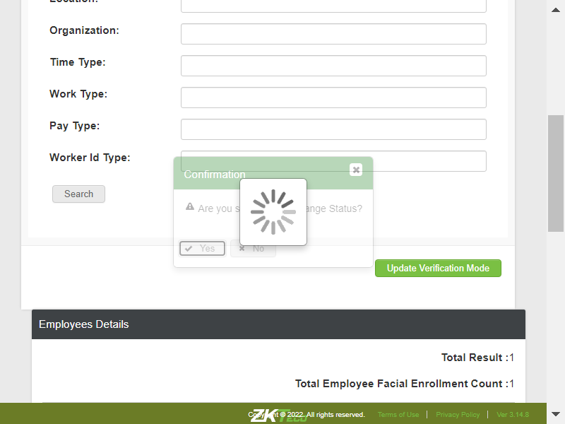To verify whether User is able to sync inactivated employee to the Devicecom.zkteco.cirrusdcs.stepDefinitions.CirrusDCS.i_initialize_drivers_for_DCS_automation()Driver InitializedGiven login in to the tenant pageThen I Click on Company setup moduleThen I click on Employees sub moduleThen I verify whether Employees pages displayed or notThen Enter the Employee details in Employee search fieldThen I click on Employee search buttonThen i click on Employee selectedThen I verify Employee information tableThen I verify Employee informationThen I verify Employee job status and make employee inactiveThen I make logoutGiven login in to the tenant pageThen I navigate to Device data syncThen I Click on sync employee radio ButtonThen I Enter Employee Nunber in quicksearch text fieldThen I Click on quicksearch search ButtonThen I verify whether employee is availableTo verify whether User can activate the Employeecom.zkteco.cirrusdcs.stepDefinitions.CirrusDCS.i_initialize_drivers_for_DCS_automation()Driver InitializedGiven login in to the tenant pageThen I Click on Company setup moduleThen I click on Employees sub moduleThen I verify whether Employees pages displayed or notThen Enter the Employee details in Employee search fieldThen I click on Employee search buttonThen i click on Employee selectedThen I verify Employee information tableThen I verify Employee informationThen I make employee activeThen I verify whether employee status updated to activeTo verify whether User is able to view Employee Attendence Informationcom.zkteco.cirrusdcs.stepDefinitions.CirrusDCS.i_initialize_drivers_for_DCS_automation()Driver InitializedGiven login in to the tenant pageThen I Click on Company setup moduleThen I click on Employees sub moduleThen I verify whether Employees pages displayed or notThen Enter the Employee details in Employee search fieldThen I click on Employee search buttonThen i click on Employee selectedThen I click on Employee Attendence information TabThen I verify whether all the field are displayedsTo verify whether User is able to make Changes for Employeecom.zkteco.cirrusdcs.stepDefinitions.CirrusDCS.i_initialize_drivers_for_DCS_automation()Driver InitializedGiven login in to the tenant pageThen I Click on Company setup moduleThen I click on Employees sub moduleThen I verify whether Employees pages displayed or notThen Enter the Employee details in Employee search fieldThen I click on Employee search buttonThen i click on Employee selectedThen I click on Employee Attendence information TabThen I verify whether all the field are displayedsThen I Enter badge numberThen I change verify modeThen I Change the device permissionThen I click on save ButtonThen I verify the changes madeTC_08: Verify whether User is able to Sync the Selected Employees to the clockcom.zkteco.cirrusdcs.stepDefinitions.CirrusDCS.i_initialize_drivers_for_DCS_automation()Driver InitializedGiven login in to the tenant pageWhen I perform mousehower on Device managerAnd I click on Device Setup sub moduleThen I click on new device buttonThen I enter the details and add the deviceThen I click on Yes buttonWhen I perform mousehower on Device managerAnd I click on Device datasync sub moduleThen I filter the devices by device sn and vaildate in device data sync pageThen I verify the selected device count is displayed properly in device data sync pageThen I sync the Employee by selection in data sync pageThen I navigate to device monitor and validate the employee syncTo verify whether User is able to View Employee Assigned Devicecom.zkteco.cirrusdcs.stepDefinitions.CirrusDCS.i_initialize_drivers_for_DCS_automation()Driver InitializedGiven login in to the tenant pageThen I Click on Company setup moduleThen I click on Employees sub moduleThen I verify whether Employees pages displayed or notThen Enter the Employee details in Employee search fieldThen I click on Employee search buttonThen i click on Employee selectedThen I click on Employee Attendence information TabThen I verify whether Assigned device ButtonTo verify whether User is able to Drop Assigned device for Employeecom.zkteco.cirrusdcs.stepDefinitions.CirrusDCS.i_initialize_drivers_for_DCS_automation()Driver InitializedGiven login in to the tenant pageThen I Click on Company setup moduleThen I click on Employees sub moduleThen I verify whether Employees pages displayed or notThen Enter the Employee details in Employee search fieldThen I click on Employee search buttonThen i click on Employee selectedThen I click on Employee Attendence information TabThen I verify whether Assigned device ButtonThen I click on Assigned device ButtonThen I selct the Device to be dropped offThen I click on drop assignment device ButtonThen I verify the whether device is dropped offTo verify whether User is able to Navigate to Employee groupscom.zkteco.cirrusdcs.stepDefinitions.CirrusDCS.i_initialize_drivers_for_DCS_automation()Driver InitializedGiven login in to the tenant pageThen I Click on Company setup moduleThen I click on Employee Groups sub moduleThen I verify whether Employee Groups pageTo verify whether User is able Create New Employee Groupcom.zkteco.cirrusdcs.stepDefinitions.CirrusDCS.i_initialize_drivers_for_DCS_automation()Driver InitializedGiven login in to the tenant pageThen I Click on Company setup moduleThen I click on Employee Groups sub moduleThen I verify whether Employee Groups pageThen I click on Add New ButtonThen I verify whether Detail Info window is displayed and all fields are presentThen I Enter Group codeThen I Enter Group Name and DescriptionThen I click on Deviceinfo save ButtonThen I verify creationn of new groupTo verify whether User is able to Edit the Group detailscom.zkteco.cirrusdcs.stepDefinitions.CirrusDCS.i_initialize_drivers_for_DCS_automation()Driver InitializedGiven login in to the tenant pageThen I Click on Company setup moduleThen I click on Employee Groups sub moduleThen I verify whether Employee Groups pageThen I select required Employee group and click on Edit ButtonThen I Enter New Group codeThen I Enter New Group Name and DescriptionThen I click on Deviceinfo save ButtonThen I verify Edit of Employee GroupTo verify whether User is able to Add employee to the Groupcom.zkteco.cirrusdcs.stepDefinitions.CirrusDCS.i_initialize_drivers_for_DCS_automation()Driver InitializedGiven login in to the tenant pageThen I Click on Company setup moduleThen I click on Employee Groups sub moduleThen I verify whether Employee Groups pageThen I create employee group for adding employee to groupThen I select required Employee group and click on Edit ButtonThen I click on Add Employee ButtonThen I Enter Employee number in search field and click on search ButtonThen I select the Employee searchedThen I Click on Add to group ButtonThen I verify whether the employee is added to groupTo verify whether User is able to remove Employee from the groupcom.zkteco.cirrusdcs.stepDefinitions.CirrusDCS.i_initialize_drivers_for_DCS_automation()Driver InitializedGiven login in to the tenant pageThen I Click on Company setup moduleThen I click on Employee Groups sub moduleThen I verify whether Employee Groups pageThen I create employee group for adding employee to groupThen I select required Employee group and click on Edit ButtonThen I click on Add Employee ButtonThen I Enter Employee number in search field and click on search ButtonThen I select the Employee searchedThen I Click on Add to group ButtonThen I verify whether the employee is added to groupThen I Select the required EmployeeThen I Click on Remove Employee ButtonThen I verify whether employee removed or notTo verify whether User is able to load employeecom.zkteco.cirrusdcs.stepDefinitions.CirrusDCS.i_initialize_drivers_for_DCS_automation()Driver InitializedGiven login in to the tenant pageThen I Click on Company setup moduleThen I click on Employee Groups sub moduleThen I verify whether Employee Groups pageThen I create employee group for adding employee to groupThen I select required Employee group and click on Edit ButtonThen I Enter the Group criteria in Group definition fieldThen I select required Employee group and click on Edit ButtonThen I Click on Load Employee ButtonThen I verify whether Employees got loadedTo verify whether User is able to View Group Detailscom.zkteco.cirrusdcs.stepDefinitions.CirrusDCS.i_initialize_drivers_for_DCS_automation()Driver InitializedGiven login in to the tenant pageThen I Click on Company setup moduleThen I click on Employee Groups sub moduleThen I verify whether Employee Groups pageThen I create employee group for adding employee to groupThen I select required Employee group and click on Edit ButtonThen I verify whether group details are displayedTo Delete Employee Groupcom.zkteco.cirrusdcs.stepDefinitions.CirrusDCS.i_initialize_drivers_for_DCS_automation()Driver InitializedGiven login in to the tenant pageThen I Click on Company setup moduleThen I click on Employee Groups sub moduleThen I verify whether Employee Groups pageThen I create employee group for adding employee to groupThen I Select required Employee group and click on Delete ButtonThen I verify whether Group is deleted successfullyTo verify whether User is able to Navigate to Time Off type pay codecom.zkteco.cirrusdcs.stepDefinitions.CirrusDCS.i_initialize_drivers_for_DCS_automation()Driver InitializedGiven login in to the tenant pageThen I Click on Company setup moduleThen I click on TimeoffTimepay submoduleThen I verify whether TimeoffTimepay page is displayedTo verify whether User is able to Add individual codecom.zkteco.cirrusdcs.stepDefinitions.CirrusDCS.i_initialize_drivers_for_DCS_automation()Driver InitializedGiven login in to the tenant pageThen I Click on Company setup moduleThen I click on TimeoffTimepay submoduleThen I verify whether TimeoffTimepay page is displayedThen I select the Default groupThen I click on Add Code ButtonThen I Enter Details in the text fieldThen I Click on Add code Save ButtonThen I verify whethercode is addedcom.zkteco.cirrusdcs.stepDefinitions.CirrusDCS.teardown(io.cucumber.java.Scenario)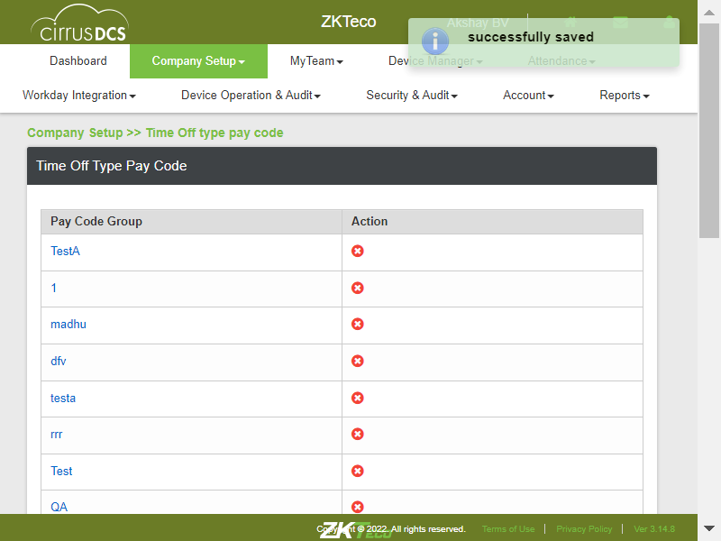To verify whether User is able to Add code with Unit as Daycom.zkteco.cirrusdcs.stepDefinitions.CirrusDCS.i_initialize_drivers_for_DCS_automation()Driver InitializedGiven login in to the tenant pageThen I Click on Company setup moduleThen I click on TimeoffTimepay submoduleThen I verify whether TimeoffTimepay page is displayedThen I select the Default groupThen I click on Add Code ButtonThen I enter neccessary details and unit as DayThen I Click on Add code Save ButtonTo verify whether User is able to Add code with Unit as Hourcom.zkteco.cirrusdcs.stepDefinitions.CirrusDCS.i_initialize_drivers_for_DCS_automation()Driver InitializedGiven login in to the tenant pageThen I Click on Company setup moduleThen I click on TimeoffTimepay submoduleThen I verify whether TimeoffTimepay page is displayedThen I select the Default groupThen I click on Add Code ButtonThen I enter neccessary details and unit as HourThen I Click on Add code Save ButtonTo verify whether User is able to Add code with "Time off Type" as Bothcom.zkteco.cirrusdcs.stepDefinitions.CirrusDCS.i_initialize_drivers_for_DCS_automation()Driver InitializedGiven login in to the tenant pageThen I Click on Company setup moduleThen I click on TimeoffTimepay submoduleThen I verify whether TimeoffTimepay page is displayedThen I select the Default groupThen I click on Add Code ButtonThen I Enter Details in the text field and Timeofftype as BothThen I Click on Add code Save ButtonThen I verify whethercode is addedcom.zkteco.cirrusdcs.stepDefinitions.CirrusDCS.teardown(io.cucumber.java.Scenario)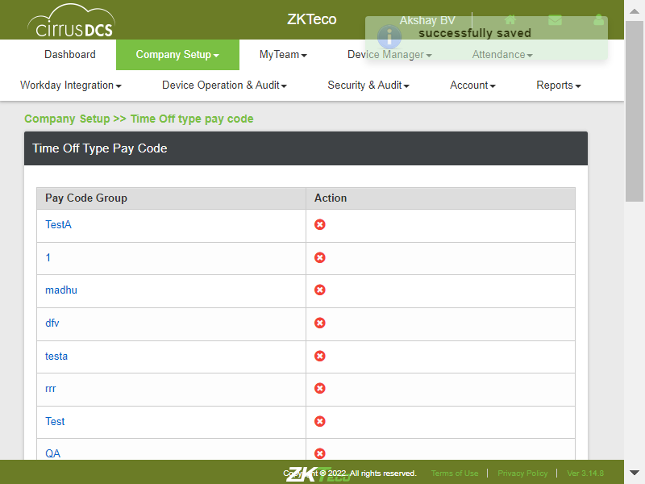To verify whether User is able to Add code with "Time off Type" as Fullcom.zkteco.cirrusdcs.stepDefinitions.CirrusDCS.i_initialize_drivers_for_DCS_automation()Driver InitializedGiven login in to the tenant pageThen I Click on Company setup moduleThen I click on TimeoffTimepay submoduleThen I verify whether TimeoffTimepay page is displayedThen I select the Default groupThen I click on Add Code ButtonThen I Enter Details in the text field and Timeofftype as FullThen I Click on Add code Save ButtonThen I verify whethercode is addedcom.zkteco.cirrusdcs.stepDefinitions.CirrusDCS.teardown(io.cucumber.java.Scenario)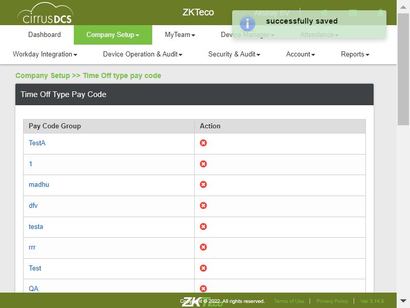To verify whether User is able to Add code with "Time off Type" as Partialcom.zkteco.cirrusdcs.stepDefinitions.CirrusDCS.i_initialize_drivers_for_DCS_automation()Driver InitializedGiven login in to the tenant pageThen I Click on Company setup moduleThen I click on TimeoffTimepay submoduleThen I verify whether TimeoffTimepay page is displayedThen I select the Default groupThen I click on Add Code ButtonThen I Enter Details in the text field and Timeofftype as partialThen I Click on Add code Save ButtonThen I verify whethercode is addedcom.zkteco.cirrusdcs.stepDefinitions.CirrusDCS.teardown(io.cucumber.java.Scenario)
To verify whether User is able to Search Employee by Advance searchcom.zkteco.cirrusdcs.stepDefinitions.CirrusDCS.i_initialize_drivers_for_DCS_automation()Driver InitializedGiven login in to the tenant pageThen I Click on Company setup moduleThen I click on Employees sub moduleThen I verify whether Employees pages displayed or notThen I verify Employees details displayed or notThen I click on Advance search DropdownThen I Enter position in text fieldThen I enter organization in Text fieldThen I Enter Time type in text fieldThen I Enter Pay type in text fieldThen I click on Search ButtonThen I verify whether advance search is successfulTo verify whether all field of Employee basic information is presentcom.zkteco.cirrusdcs.stepDefinitions.CirrusDCS.i_initialize_drivers_for_DCS_automation()Driver InitializedGiven login in to the tenant pageThen I Click on Company setup moduleThen I click on Employees sub moduleThen I verify whether Employees pages displayed or notThen Enter the Employee details in Employee search fieldThen I click on Employee search buttonThen i click on Employee selectedThen I verify Employee information tableTo verify whether User is able view Employee Basic informationcom.zkteco.cirrusdcs.stepDefinitions.CirrusDCS.i_initialize_drivers_for_DCS_automation()Driver InitializedGiven login in to the tenant pageThen I Click on Company setup moduleThen I click on Employees sub moduleThen I verify whether Employees pages displayed or notThen Enter the Employee details in Employee search fieldThen I click on Employee search buttonThen i click on Employee selectedThen I verify Employee information tableThen I verify Employee informationTo verify whether User is able to Reload Employeecom.zkteco.cirrusdcs.stepDefinitions.CirrusDCS.i_initialize_drivers_for_DCS_automation()Driver InitializedGiven login in to the tenant pageThen I Click on Company setup moduleThen I click on Employees sub moduleThen I verify whether Employees pages displayed or notThen Enter the Employee details in Employee search fieldThen I click on Employee search buttonThen i click on Employee selectedThen I verify Employee information tableThen I verify Employee informationThen I click on Reload employee ButtonThen I Click on Yes ButtonTo verify whether User is able to Inactivate the Employeecom.zkteco.cirrusdcs.stepDefinitions.CirrusDCS.i_initialize_drivers_for_DCS_automation()Driver InitializedGiven login in to the tenant pageThen I Click on Company setup moduleThen I click on Employees sub moduleThen I verify whether Employees pages displayed or notThen Enter the Employee details in Employee search fieldThen I click on Employee search buttonThen i click on Employee selectedThen I verify Employee information tableThen I verify Employee informationThen I verify Employee is active or inactive and click on ButtonThen I verify the status changedcom.zkteco.cirrusdcs.stepDefinitions.CirrusDCS.teardown(io.cucumber.java.Scenario)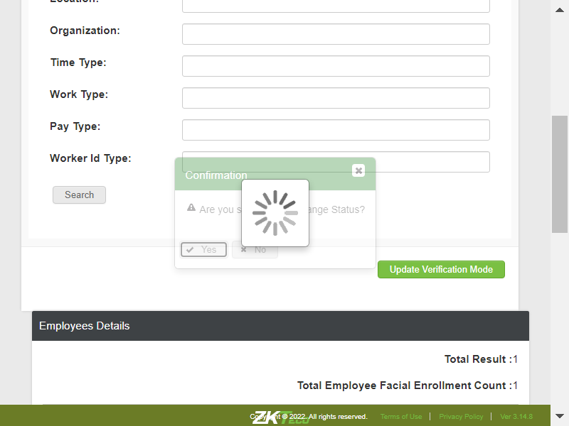To verify whether User is able to sync inactivated employee to the Devicecom.zkteco.cirrusdcs.stepDefinitions.CirrusDCS.i_initialize_drivers_for_DCS_automation()Driver InitializedGiven login in to the tenant pageThen I Click on Company setup moduleThen I click on Employees sub moduleThen I verify whether Employees pages displayed or notThen Enter the Employee details in Employee search fieldThen I click on Employee search buttonThen i click on Employee selectedThen I verify Employee information tableThen I verify Employee informationThen I verify Employee job status and make employee inactiveThen I make logoutGiven login in to the tenant pageThen I navigate to Device data syncThen I Click on sync employee radio ButtonThen I Enter Employee Nunber in quicksearch text fieldThen I Click on quicksearch search ButtonThen I verify whether employee is availableTo verify whether User can activate the Employeecom.zkteco.cirrusdcs.stepDefinitions.CirrusDCS.i_initialize_drivers_for_DCS_automation()Driver InitializedGiven login in to the tenant pageThen I Click on Company setup moduleThen I click on Employees sub moduleThen I verify whether Employees pages displayed or notThen Enter the Employee details in Employee search fieldThen I click on Employee search buttonThen i click on Employee selectedThen I verify Employee information tableThen I verify Employee informationThen I make employee activeThen I verify whether employee status updated to activeTo verify whether User is able to view Employee Attendence Informationcom.zkteco.cirrusdcs.stepDefinitions.CirrusDCS.i_initialize_drivers_for_DCS_automation()Driver InitializedGiven login in to the tenant pageThen I Click on Company setup moduleThen I click on Employees sub moduleThen I verify whether Employees pages displayed or notThen Enter the Employee details in Employee search fieldThen I click on Employee search buttonThen i click on Employee selectedThen I click on Employee Attendence information TabThen I verify whether all the field are displayedsTo verify whether User is able to make Changes for Employeecom.zkteco.cirrusdcs.stepDefinitions.CirrusDCS.i_initialize_drivers_for_DCS_automation()Driver InitializedGiven login in to the tenant pageThen I Click on Company setup moduleThen I click on Employees sub moduleThen I verify whether Employees pages displayed or notThen Enter the Employee details in Employee search fieldThen I click on Employee search buttonThen i click on Employee selectedThen I click on Employee Attendence information TabThen I verify whether all the field are displayedsThen I Enter badge numberThen I change verify modeThen I Change the device permissionThen I click on save ButtonThen I verify the changes madeTC_08: Verify whether User is able to Sync the Selected Employees to the clockcom.zkteco.cirrusdcs.stepDefinitions.CirrusDCS.i_initialize_drivers_for_DCS_automation()Driver InitializedGiven login in to the tenant pageWhen I perform mousehower on Device managerAnd I click on Device Setup sub moduleThen I click on new device buttonThen I enter the details and add the deviceThen I click on Yes buttonWhen I perform mousehower on Device managerAnd I click on Device datasync sub moduleThen I filter the devices by device sn and vaildate in device data sync pageThen I verify the selected device count is displayed properly in device data sync pageThen I sync the Employee by selection in data sync pageThen I navigate to device monitor and validate the employee syncTo verify whether User is able to View Employee Assigned Devicecom.zkteco.cirrusdcs.stepDefinitions.CirrusDCS.i_initialize_drivers_for_DCS_automation()Driver InitializedGiven login in to the tenant pageThen I Click on Company setup moduleThen I click on Employees sub moduleThen I verify whether Employees pages displayed or notThen Enter the Employee details in Employee search fieldThen I click on Employee search buttonThen i click on Employee selectedThen I click on Employee Attendence information TabThen I verify whether Assigned device ButtonTo verify whether User is able to Drop Assigned device for Employeecom.zkteco.cirrusdcs.stepDefinitions.CirrusDCS.i_initialize_drivers_for_DCS_automation()Driver InitializedGiven login in to the tenant pageThen I Click on Company setup moduleThen I click on Employees sub moduleThen I verify whether Employees pages displayed or notThen Enter the Employee details in Employee search fieldThen I click on Employee search buttonThen i click on Employee selectedThen I click on Employee Attendence information TabThen I verify whether Assigned device ButtonThen I click on Assigned device ButtonThen I selct the Device to be dropped offThen I click on drop assignment device ButtonThen I verify the whether device is dropped offTo verify whether User is able to Navigate to Employee groupscom.zkteco.cirrusdcs.stepDefinitions.CirrusDCS.i_initialize_drivers_for_DCS_automation()Driver InitializedGiven login in to the tenant pageThen I Click on Company setup moduleThen I click on Employee Groups sub moduleThen I verify whether Employee Groups pageTo verify whether User is able Create New Employee Groupcom.zkteco.cirrusdcs.stepDefinitions.CirrusDCS.i_initialize_drivers_for_DCS_automation()Driver InitializedGiven login in to the tenant pageThen I Click on Company setup moduleThen I click on Employee Groups sub moduleThen I verify whether Employee Groups pageThen I click on Add New ButtonThen I verify whether Detail Info window is displayed and all fields are presentThen I Enter Group codeThen I Enter Group Name and DescriptionThen I click on Deviceinfo save ButtonThen I verify creationn of new groupTo verify whether User is able to Edit the Group detailscom.zkteco.cirrusdcs.stepDefinitions.CirrusDCS.i_initialize_drivers_for_DCS_automation()Driver InitializedGiven login in to the tenant pageThen I Click on Company setup moduleThen I click on Employee Groups sub moduleThen I verify whether Employee Groups pageThen I select required Employee group and click on Edit ButtonThen I Enter New Group codeThen I Enter New Group Name and DescriptionThen I click on Deviceinfo save ButtonThen I verify Edit of Employee GroupTo verify whether User is able to Add employee to the Groupcom.zkteco.cirrusdcs.stepDefinitions.CirrusDCS.i_initialize_drivers_for_DCS_automation()Driver InitializedGiven login in to the tenant pageThen I Click on Company setup moduleThen I click on Employee Groups sub moduleThen I verify whether Employee Groups pageThen I create employee group for adding employee to groupThen I select required Employee group and click on Edit ButtonThen I click on Add Employee ButtonThen I Enter Employee number in search field and click on search ButtonThen I select the Employee searchedThen I Click on Add to group ButtonThen I verify whether the employee is added to groupTo verify whether User is able to remove Employee from the groupcom.zkteco.cirrusdcs.stepDefinitions.CirrusDCS.i_initialize_drivers_for_DCS_automation()Driver InitializedGiven login in to the tenant pageThen I Click on Company setup moduleThen I click on Employee Groups sub moduleThen I verify whether Employee Groups pageThen I create employee group for adding employee to groupThen I select required Employee group and click on Edit ButtonThen I click on Add Employee ButtonThen I Enter Employee number in search field and click on search ButtonThen I select the Employee searchedThen I Click on Add to group ButtonThen I verify whether the employee is added to groupThen I Select the required EmployeeThen I Click on Remove Employee ButtonThen I verify whether employee removed or notTo verify whether User is able to load employeecom.zkteco.cirrusdcs.stepDefinitions.CirrusDCS.i_initialize_drivers_for_DCS_automation()Driver InitializedGiven login in to the tenant pageThen I Click on Company setup moduleThen I click on Employee Groups sub moduleThen I verify whether Employee Groups pageThen I create employee group for adding employee to groupThen I select required Employee group and click on Edit ButtonThen I Enter the Group criteria in Group definition fieldThen I select required Employee group and click on Edit ButtonThen I Click on Load Employee ButtonThen I verify whether Employees got loadedTo verify whether User is able to View Group Detailscom.zkteco.cirrusdcs.stepDefinitions.CirrusDCS.i_initialize_drivers_for_DCS_automation()Driver InitializedGiven login in to the tenant pageThen I Click on Company setup moduleThen I click on Employee Groups sub moduleThen I verify whether Employee Groups pageThen I create employee group for adding employee to groupThen I select required Employee group and click on Edit ButtonThen I verify whether group details are displayedTo Delete Employee Groupcom.zkteco.cirrusdcs.stepDefinitions.CirrusDCS.i_initialize_drivers_for_DCS_automation()Driver InitializedGiven login in to the tenant pageThen I Click on Company setup moduleThen I click on Employee Groups sub moduleThen I verify whether Employee Groups pageThen I create employee group for adding employee to groupThen I Select required Employee group and click on Delete ButtonThen I verify whether Group is deleted successfullyTo verify whether User is able to Navigate to Time Off type pay codecom.zkteco.cirrusdcs.stepDefinitions.CirrusDCS.i_initialize_drivers_for_DCS_automation()Driver InitializedGiven login in to the tenant pageThen I Click on Company setup moduleThen I click on TimeoffTimepay submoduleThen I verify whether TimeoffTimepay page is displayedTo verify whether User is able to Add individual codecom.zkteco.cirrusdcs.stepDefinitions.CirrusDCS.i_initialize_drivers_for_DCS_automation()Driver InitializedGiven login in to the tenant pageThen I Click on Company setup moduleThen I click on TimeoffTimepay submoduleThen I verify whether TimeoffTimepay page is displayedThen I select the Default groupThen I click on Add Code ButtonThen I Enter Details in the text fieldThen I Click on Add code Save ButtonThen I verify whethercode is addedcom.zkteco.cirrusdcs.stepDefinitions.CirrusDCS.teardown(io.cucumber.java.Scenario)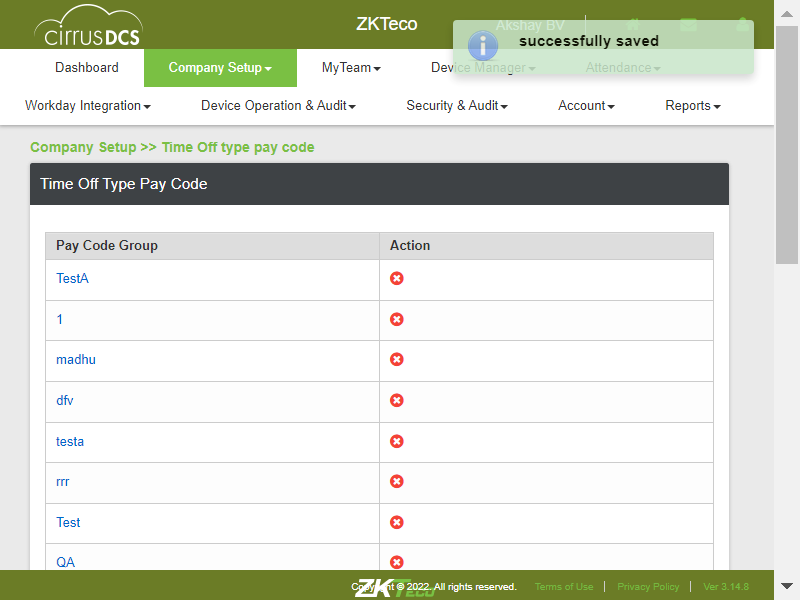To verify whether User is able to Add code with Unit as Daycom.zkteco.cirrusdcs.stepDefinitions.CirrusDCS.i_initialize_drivers_for_DCS_automation()Driver InitializedGiven login in to the tenant pageThen I Click on Company setup moduleThen I click on TimeoffTimepay submoduleThen I verify whether TimeoffTimepay page is displayedThen I select the Default groupThen I click on Add Code ButtonThen I enter neccessary details and unit as DayThen I Click on Add code Save ButtonTo verify whether User is able to Add code with Unit as Hourcom.zkteco.cirrusdcs.stepDefinitions.CirrusDCS.i_initialize_drivers_for_DCS_automation()Driver InitializedGiven login in to the tenant pageThen I Click on Company setup moduleThen I click on TimeoffTimepay submoduleThen I verify whether TimeoffTimepay page is displayedThen I select the Default groupThen I click on Add Code ButtonThen I enter neccessary details and unit as HourThen I Click on Add code Save ButtonTo verify whether User is able to Add code with "Time off Type" as Bothcom.zkteco.cirrusdcs.stepDefinitions.CirrusDCS.i_initialize_drivers_for_DCS_automation()Driver InitializedGiven login in to the tenant pageThen I Click on Company setup moduleThen I click on TimeoffTimepay submoduleThen I verify whether TimeoffTimepay page is displayedThen I select the Default groupThen I click on Add Code ButtonThen I Enter Details in the text field and Timeofftype as BothThen I Click on Add code Save ButtonThen I verify whethercode is addedcom.zkteco.cirrusdcs.stepDefinitions.CirrusDCS.teardown(io.cucumber.java.Scenario)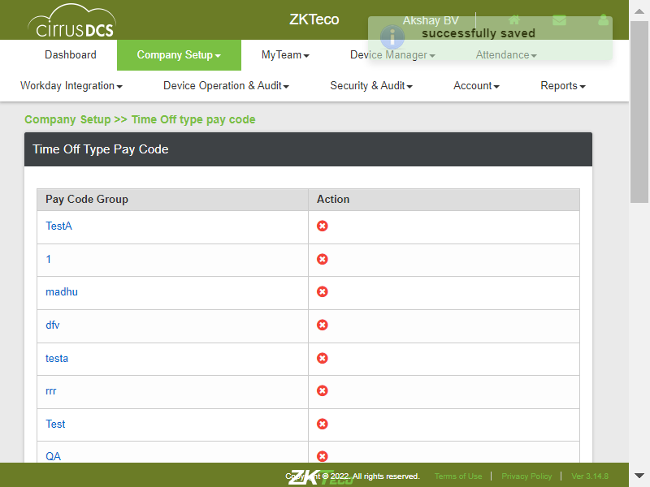To verify whether User is able to Add code with "Time off Type" as Fullcom.zkteco.cirrusdcs.stepDefinitions.CirrusDCS.i_initialize_drivers_for_DCS_automation()Driver InitializedGiven login in to the tenant pageThen I Click on Company setup moduleThen I click on TimeoffTimepay submoduleThen I verify whether TimeoffTimepay page is displayedThen I select the Default groupThen I click on Add Code ButtonThen I Enter Details in the text field and Timeofftype as FullThen I Click on Add code Save ButtonThen I verify whethercode is addedcom.zkteco.cirrusdcs.stepDefinitions.CirrusDCS.teardown(io.cucumber.java.Scenario)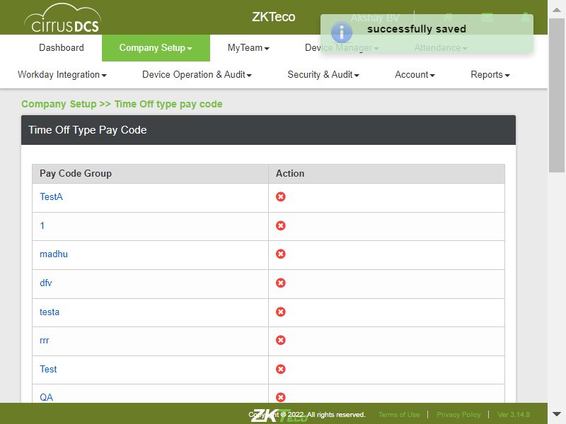To verify whether User is able to Add code with "Time off Type" as Partialcom.zkteco.cirrusdcs.stepDefinitions.CirrusDCS.i_initialize_drivers_for_DCS_automation()Driver InitializedGiven login in to the tenant pageThen I Click on Company setup moduleThen I click on TimeoffTimepay submoduleThen I verify whether TimeoffTimepay page is displayedThen I select the Default groupThen I click on Add Code ButtonThen I Enter Details in the text field and Timeofftype as partialThen I Click on Add code Save ButtonThen I verify whethercode is addedcom.zkteco.cirrusdcs.stepDefinitions.CirrusDCS.teardown(io.cucumber.java.Scenario) To verify whether User is able to Add code with include weekendcom.zkteco.cirrusdcs.stepDefinitions.CirrusDCS.i_initialize_drivers_for_DCS_automation()Driver InitializedGiven login in to the tenant pageThen I Click on Company setup moduleThen I click on TimeoffTimepay submoduleThen I verify whether TimeoffTimepay page is displayedThen I select the Default groupThen I click on Add Code ButtonThen I Enter Details in the text field and include WeekendThen I Click on Add code Save ButtonThen I verify whethercode is addedcom.zkteco.cirrusdcs.stepDefinitions.CirrusDCS.teardown(io.cucumber.java.Scenario)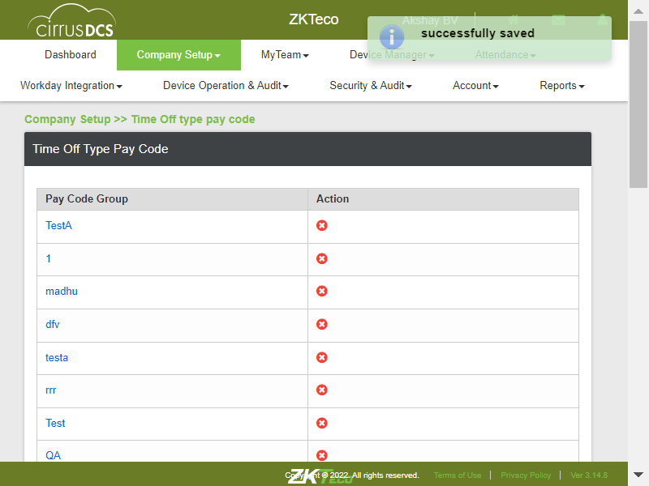To verify whether User is able to Add pay code to new Groupcom.zkteco.cirrusdcs.stepDefinitions.CirrusDCS.i_initialize_drivers_for_DCS_automation()Driver InitializedGiven login in to the tenant pageThen I Click on Company setup moduleThen I click on TimeoffTimepay submoduleThen I verify whether TimeoffTimepay page is displayedThen I select the GroupThen I Click on assignpaycode ButtonThen I select the paycodesThen I click on assign pay codes to groupThen I verify whether pay codes are added to groupTo verify whether User is able to navigate to Bio-Attestation pagecom.zkteco.cirrusdcs.stepDefinitions.CirrusDCS.i_initialize_drivers_for_DCS_automation()Driver InitializedGiven login in to the tenant pageThen I Click on Company setup moduleThen I click on attestation moduleThen I click on BioattesationThen I verify whether Bioattestation page is displayedTo verify whether User is able to Add New Face type Bio-Attestationcom.zkteco.cirrusdcs.stepDefinitions.CirrusDCS.i_initialize_drivers_for_DCS_automation()Driver InitializedGiven login in to the tenant pageThen I Click on Company setup moduleThen I click on attestation moduleThen I click on BioattesationThen I verify whether Bioattestation page is displayedThen I click on New ButtonThen I Enter Bioattestation nameThen I select Bioattestation TypeThen I click on Add language ButtonThen I select the LanguageThen I Enter attestation policyThen I click on AttSave ButtonThen I verify wherther created Bioattstation is saved or notTo verify whether User is able to Add New Fingerprint type Bio-Attestationcom.zkteco.cirrusdcs.stepDefinitions.CirrusDCS.i_initialize_drivers_for_DCS_automation()Driver InitializedGiven login in to the tenant pageThen I Click on Company setup moduleThen I click on attestation moduleThen I click on BioattesationThen I verify whether Bioattestation page is displayedThen I click on New ButtonThen I Enter Bioattestation name fingerThen I select Bioattestation Type FingerThen I click on Add language ButtonThen I select the LanguageThen I Enter attestation policyThen I click on AttSave ButtonThen I verify wherther created Bioattstation finger is saved or notTo verify whether User is able to Add new Bio-Attestaton with language as Englishcom.zkteco.cirrusdcs.stepDefinitions.CirrusDCS.i_initialize_drivers_for_DCS_automation()Driver InitializedGiven login in to the tenant pageThen I Click on Company setup moduleThen I click on attestation moduleThen I click on BioattesationThen I verify whether Bioattestation page is displayedThen I click on New ButtonThen I Enter Bioattestation nameThen I select Bioattestation TypeThen I click on Add language ButtonThen I select the LanguageThen I Enter attestation policyThen I click on AttSave ButtonThen I verify wherther created Bioattstation is saved or notTo verify whether User is able to Add new Bio-Attestaton with with multiple languagecom.zkteco.cirrusdcs.stepDefinitions.CirrusDCS.i_initialize_drivers_for_DCS_automation()Driver InitializedGiven login in to the tenant pageThen I Click on Company setup moduleThen I click on attestation moduleThen I click on BioattesationThen I verify whether Bioattestation page is displayedThen I click on New ButtonThen I Enter Bioattestation name multiple langThen I select Bioattestation TypeThen I click on Add language ButtonThen I select the LanguageThen I Enter attestation policyThen I click on Add language ButtonThen I select the New LanguageThen I Enter attestation policyThen I Enter attestation policy 2Then I click on AttSave ButtonThen I verify wherther created Bioattstation with multiple lang is saved or notTo verify whehther User is able to Edit the Bio-Attestationcom.zkteco.cirrusdcs.stepDefinitions.CirrusDCS.i_initialize_drivers_for_DCS_automation()Driver InitializedGiven login in to the tenant pageThen I Click on Company setup moduleThen I click on attestation moduleThen I click on BioattesationThen I verify whether Bioattestation page is displayedThen I select the required BioAttestaion profile and click on Edit ButtonThen I make the changes in the profileThen I click on AttSave ButtonThen I verify wherther created Bioattstation with changes is saved or notStep skippedcom.zkteco.cirrusdcs.stepDefinitions.CirrusDCS.teardown(io.cucumber.java.Scenario)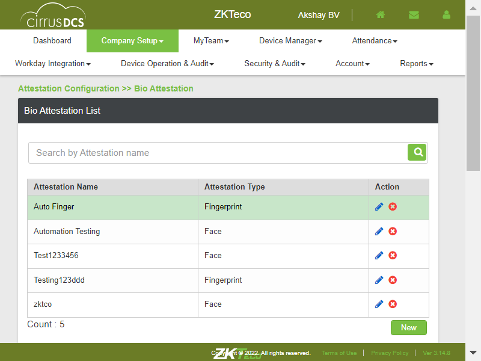To verify whether User is able to Delete the Bio-Attestaioncom.zkteco.cirrusdcs.stepDefinitions.CirrusDCS.i_initialize_drivers_for_DCS_automation()Driver InitializedGiven login in to the tenant pageThen I Click on Company setup moduleThen I click on attestation moduleThen I click on BioattesationThen I verify whether Bioattestation page is displayedThen I select the required BioAttestaion profile and click on Delete ButtonThen I verify whether Deleted BioAttsprofille is deleted from the listTo verify whether User is able to search the Bio-Attestaion createdcom.zkteco.cirrusdcs.stepDefinitions.CirrusDCS.i_initialize_drivers_for_DCS_automation()Driver InitializedGiven login in to the tenant pageThen I Click on Company setup moduleThen I click on attestation moduleThen I click on BioattesationThen I verify whether Bioattestation page is displayedThen I Enter BioAttestation Name in the Search fieldThen I click on BioAtts search ButtonThen I verify whether search is successfull or notTo verify whether User is able to Navigate to Questions pagecom.zkteco.cirrusdcs.stepDefinitions.CirrusDCS.i_initialize_drivers_for_DCS_automation()Driver InitializedGiven login in to the tenant pageThen I Click on Company setup moduleThen I click on attestation moduleThen I move cursor on General AttestationThen I click on Question submoduleThen I verify whether Questions page is displayed or notTo verify whether User is able to Add New Questioncom.zkteco.cirrusdcs.stepDefinitions.CirrusDCS.i_initialize_drivers_for_DCS_automation()Driver InitializedGiven login in to the tenant pageThen I Click on Company setup moduleThen I click on attestation moduleThen I move cursor on General AttestationThen I click on Question submoduleThen I verify whether Questions page is displayed or notThen I click on Qns page New buttonThen I Enter QuestionThen I Enter Question NameThen I click on Response Button DropdownThen I select Response1Step skippedThen I click on Add ButtonStep skippedThen I click on Response Button DropdownStep skippedThen I select Response2Step skippedThen I click on Qnspage Save ButtonStep skippedcom.zkteco.cirrusdcs.stepDefinitions.CirrusDCS.teardown(io.cucumber.java.Scenario)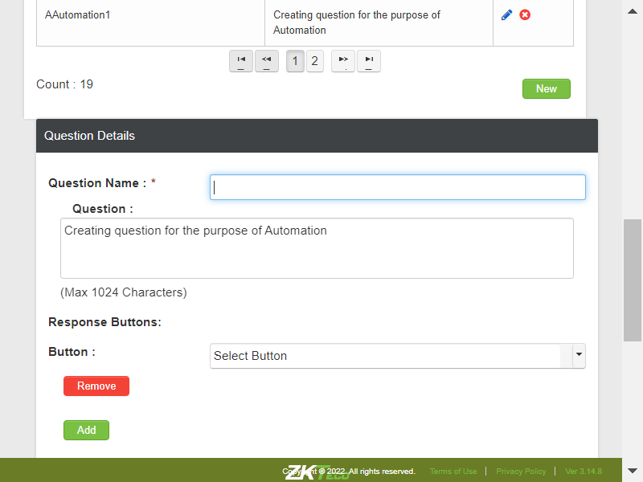To verify whether User is able to Edit the Questionscom.zkteco.cirrusdcs.stepDefinitions.CirrusDCS.i_initialize_drivers_for_DCS_automation()Driver InitializedGiven login in to the tenant pageThen I Click on Company setup moduleThen I click on attestation moduleThen I move cursor on General AttestationThen I click on Question submoduleThen I verify whether Questions page is displayed or notThen I click on Qns page New buttonThen I Edit the QuestionThen I Enter Question NameThen I click on Response Button DropdownThen I select Response1Step skippedThen I click on Add ButtonStep skippedThen I click on Response Button DropdownStep skippedThen I select Response2Step skippedThen I click on Qnspage Save ButtonStep skippedcom.zkteco.cirrusdcs.stepDefinitions.CirrusDCS.teardown(io.cucumber.java.Scenario)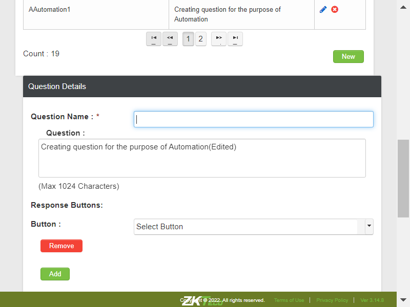To verify whether question created is reflecting in Profile pagecom.zkteco.cirrusdcs.stepDefinitions.CirrusDCS.i_initialize_drivers_for_DCS_automation()Driver InitializedGiven login in to the tenant pageThen I Click on Company setup moduleThen I click on attestation moduleThen I move cursor on General AttestationThen I click on Profile Sub moduleThen I click on profile New ButtonThen I click on Question1 dropdownThen I verify whether required question is reflected in dropdown listTo verify whether User is able to Delete the Questioncom.zkteco.cirrusdcs.stepDefinitions.CirrusDCS.i_initialize_drivers_for_DCS_automation()Driver InitializedGiven login in to the tenant pageThen I Click on Company setup moduleThen I click on attestation moduleThen I move cursor on General AttestationThen I click on Question submoduleThen I verify whether Questions page is displayed or notThen I Enter Question in search fieldThen I click on Search Button of Seach TFThen I verify qns ans click on Delete ButtonThen I verify whether Qns is deleted or notTo verify whether User is able to Navigate to Profile Pagecom.zkteco.cirrusdcs.stepDefinitions.CirrusDCS.i_initialize_drivers_for_DCS_automation()Driver InitializedGiven login in to the tenant pageThen I Click on Company setup moduleThen I click on attestation moduleThen I move cursor on General AttestationThen I click on Profile Sub moduleTo verify whether User is able to Add New profilecom.zkteco.cirrusdcs.stepDefinitions.CirrusDCS.i_initialize_drivers_for_DCS_automation()Driver InitializedGiven login in to the tenant pageThen I Click on Company setup moduleThen I click on attestation moduleThen I move cursor on General AttestationThen I click on Profile Sub moduleThen I click on profile New ButtonStep skippedThen I Enter profile NameStep skippedThen I Enter profile DescriptionStep skippedThen I click on Question1 dropdownStep skippedThen I select the required question from dropdownStep skippedThen I click on Map_Clock Data Field dropdownStep skippedThen I select the MaMap_Clock DataStep skippedThen I click on profile save ButtonStep skippedThen I verify whether Created new profile is listed in Profile listStep skippedcom.zkteco.cirrusdcs.stepDefinitions.CirrusDCS.teardown(io.cucumber.java.Scenario)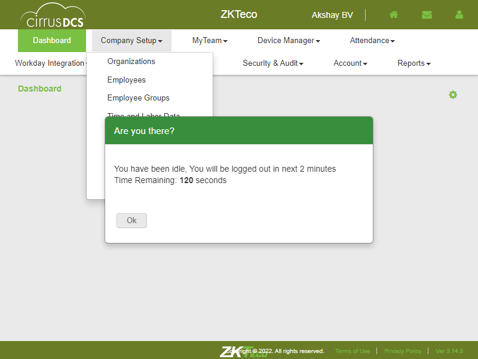To verify whether User is able to Add multiple questions for profilecom.zkteco.cirrusdcs.stepDefinitions.CirrusDCS.i_initialize_drivers_for_DCS_automation()Given login in to the tenant pageStep skippedThen I Click on Company setup moduleStep skippedThen I click on attestation moduleStep skippedThen I move cursor on General AttestationStep skippedThen I click on Profile Sub moduleStep skippedThen I click on profile New ButtonStep skippedThen I Enter profile Name with 2 QnsStep skippedThen I Enter profile DescriptionStep skippedThen I click on Question1 dropdownStep skippedThen I select the required question from dropdownStep skippedThen I click on Map_Clock Data Field dropdownStep skippedThen I select the MaMap_Clock DataStep skippedThen I Enter value for setvalue TF of Qns1 Yes ButtonStep skippedThen I click on action dropdown of Qns1 Yes ButtonStep skippedThen I select the Action of Yes Button of Qns1Step skippedThen I Enter value for setvalue TF of Qns1 No ButtonStep skippedThen I click on action dropdown of Qns1 No ButtonStep skippedThen I select the Action of No Button of Qns1Step skippedThen I click on Qns Add ButtonStep skippedThen I click on Question2 dropdownStep skippedThen I select the required 2nd question from dropdownStep skippedThen I click on Map_Clock Data2 Field dropdownStep skippedThen I select the MaMap_Clock2 DataStep skippedThen I click on Link to Question DropdownStep skippedThen I select the Qns to be linkedStep skippedThen I click on Link to Button DropdownStep skippedThen I select Link ButtonStep skippedThen I click on profile save ButtonStep skippedThen I verify whether Created new profile is listed in Profile listStep skippedcom.zkteco.cirrusdcs.stepDefinitions.CirrusDCS.teardown(io.cucumber.java.Scenario)To Edit the Profilecom.zkteco.cirrusdcs.stepDefinitions.CirrusDCS.i_initialize_drivers_for_DCS_automation()Given login in to the tenant pageStep skippedThen I Click on Company setup moduleStep skippedThen I click on attestation moduleStep skippedThen I move cursor on General AttestationStep skippedThen I click on Profile Sub moduleStep skippedThen I Search the Profile need to be EditedStep skippedThen I click on Edit Button of the profileStep skippedThen I Edit the profileStep skippedThen I click on profile save ButtonStep skippedThen I Verify whether Edited profile is updatedStep skippedcom.zkteco.cirrusdcs.stepDefinitions.CirrusDCS.teardown(io.cucumber.java.Scenario)To verify whether User should be able to Delete the Profilecom.zkteco.cirrusdcs.stepDefinitions.CirrusDCS.i_initialize_drivers_for_DCS_automation()Given login in to the tenant pageStep skippedThen I Click on Company setup moduleStep skippedThen I click on attestation moduleStep skippedThen I move cursor on General AttestationStep skippedThen I click on Profile Sub moduleStep skippedThen I Search the Profile need to be DeletedStep skippedThen I click on Delete Button of the profileStep skippedThen I verify whether profile is DeletedStep skippedcom.zkteco.cirrusdcs.stepDefinitions.CirrusDCS.teardown(io.cucumber.java.Scenario)
To verify whether User is able to Add code with include weekendcom.zkteco.cirrusdcs.stepDefinitions.CirrusDCS.i_initialize_drivers_for_DCS_automation()Driver InitializedGiven login in to the tenant pageThen I Click on Company setup moduleThen I click on TimeoffTimepay submoduleThen I verify whether TimeoffTimepay page is displayedThen I select the Default groupThen I click on Add Code ButtonThen I Enter Details in the text field and include WeekendThen I Click on Add code Save ButtonThen I verify whethercode is addedcom.zkteco.cirrusdcs.stepDefinitions.CirrusDCS.teardown(io.cucumber.java.Scenario)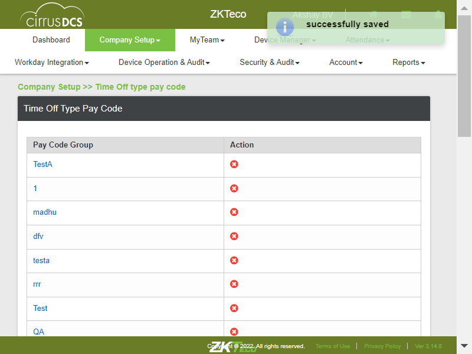To verify whether User is able to Add pay code to new Groupcom.zkteco.cirrusdcs.stepDefinitions.CirrusDCS.i_initialize_drivers_for_DCS_automation()Driver InitializedGiven login in to the tenant pageThen I Click on Company setup moduleThen I click on TimeoffTimepay submoduleThen I verify whether TimeoffTimepay page is displayedThen I select the GroupThen I Click on assignpaycode ButtonThen I select the paycodesThen I click on assign pay codes to groupThen I verify whether pay codes are added to groupTo verify whether User is able to navigate to Bio-Attestation pagecom.zkteco.cirrusdcs.stepDefinitions.CirrusDCS.i_initialize_drivers_for_DCS_automation()Driver InitializedGiven login in to the tenant pageThen I Click on Company setup moduleThen I click on attestation moduleThen I click on BioattesationThen I verify whether Bioattestation page is displayedTo verify whether User is able to Add New Face type Bio-Attestationcom.zkteco.cirrusdcs.stepDefinitions.CirrusDCS.i_initialize_drivers_for_DCS_automation()Driver InitializedGiven login in to the tenant pageThen I Click on Company setup moduleThen I click on attestation moduleThen I click on BioattesationThen I verify whether Bioattestation page is displayedThen I click on New ButtonThen I Enter Bioattestation nameThen I select Bioattestation TypeThen I click on Add language ButtonThen I select the LanguageThen I Enter attestation policyThen I click on AttSave ButtonThen I verify wherther created Bioattstation is saved or notTo verify whether User is able to Add New Fingerprint type Bio-Attestationcom.zkteco.cirrusdcs.stepDefinitions.CirrusDCS.i_initialize_drivers_for_DCS_automation()Driver InitializedGiven login in to the tenant pageThen I Click on Company setup moduleThen I click on attestation moduleThen I click on BioattesationThen I verify whether Bioattestation page is displayedThen I click on New ButtonThen I Enter Bioattestation name fingerThen I select Bioattestation Type FingerThen I click on Add language ButtonThen I select the LanguageThen I Enter attestation policyThen I click on AttSave ButtonThen I verify wherther created Bioattstation finger is saved or notTo verify whether User is able to Add new Bio-Attestaton with language as Englishcom.zkteco.cirrusdcs.stepDefinitions.CirrusDCS.i_initialize_drivers_for_DCS_automation()Driver InitializedGiven login in to the tenant pageThen I Click on Company setup moduleThen I click on attestation moduleThen I click on BioattesationThen I verify whether Bioattestation page is displayedThen I click on New ButtonThen I Enter Bioattestation nameThen I select Bioattestation TypeThen I click on Add language ButtonThen I select the LanguageThen I Enter attestation policyThen I click on AttSave ButtonThen I verify wherther created Bioattstation is saved or notTo verify whether User is able to Add new Bio-Attestaton with with multiple languagecom.zkteco.cirrusdcs.stepDefinitions.CirrusDCS.i_initialize_drivers_for_DCS_automation()Driver InitializedGiven login in to the tenant pageThen I Click on Company setup moduleThen I click on attestation moduleThen I click on BioattesationThen I verify whether Bioattestation page is displayedThen I click on New ButtonThen I Enter Bioattestation name multiple langThen I select Bioattestation TypeThen I click on Add language ButtonThen I select the LanguageThen I Enter attestation policyThen I click on Add language ButtonThen I select the New LanguageThen I Enter attestation policyThen I Enter attestation policy 2Then I click on AttSave ButtonThen I verify wherther created Bioattstation with multiple lang is saved or notTo verify whehther User is able to Edit the Bio-Attestationcom.zkteco.cirrusdcs.stepDefinitions.CirrusDCS.i_initialize_drivers_for_DCS_automation()Driver InitializedGiven login in to the tenant pageThen I Click on Company setup moduleThen I click on attestation moduleThen I click on BioattesationThen I verify whether Bioattestation page is displayedThen I select the required BioAttestaion profile and click on Edit ButtonThen I make the changes in the profileThen I click on AttSave ButtonThen I verify wherther created Bioattstation with changes is saved or notStep skippedcom.zkteco.cirrusdcs.stepDefinitions.CirrusDCS.teardown(io.cucumber.java.Scenario)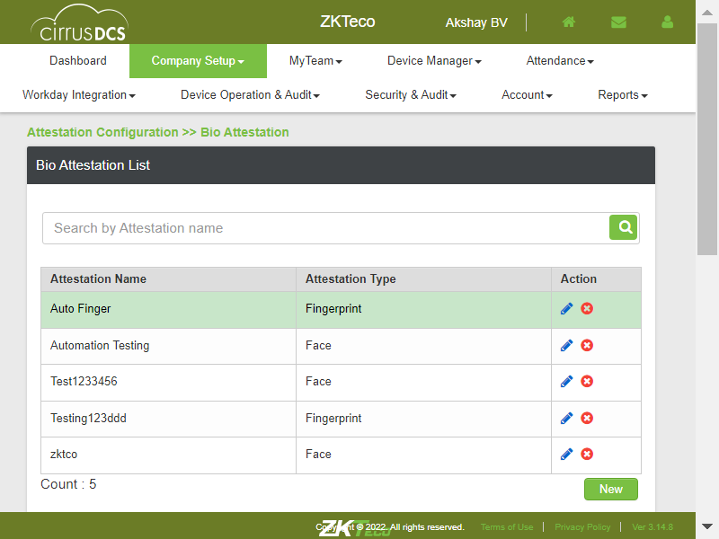To verify whether User is able to Delete the Bio-Attestaioncom.zkteco.cirrusdcs.stepDefinitions.CirrusDCS.i_initialize_drivers_for_DCS_automation()Driver InitializedGiven login in to the tenant pageThen I Click on Company setup moduleThen I click on attestation moduleThen I click on BioattesationThen I verify whether Bioattestation page is displayedThen I select the required BioAttestaion profile and click on Delete ButtonThen I verify whether Deleted BioAttsprofille is deleted from the listTo verify whether User is able to search the Bio-Attestaion createdcom.zkteco.cirrusdcs.stepDefinitions.CirrusDCS.i_initialize_drivers_for_DCS_automation()Driver InitializedGiven login in to the tenant pageThen I Click on Company setup moduleThen I click on attestation moduleThen I click on BioattesationThen I verify whether Bioattestation page is displayedThen I Enter BioAttestation Name in the Search fieldThen I click on BioAtts search ButtonThen I verify whether search is successfull or notTo verify whether User is able to Navigate to Questions pagecom.zkteco.cirrusdcs.stepDefinitions.CirrusDCS.i_initialize_drivers_for_DCS_automation()Driver InitializedGiven login in to the tenant pageThen I Click on Company setup moduleThen I click on attestation moduleThen I move cursor on General AttestationThen I click on Question submoduleThen I verify whether Questions page is displayed or notTo verify whether User is able to Add New Questioncom.zkteco.cirrusdcs.stepDefinitions.CirrusDCS.i_initialize_drivers_for_DCS_automation()Driver InitializedGiven login in to the tenant pageThen I Click on Company setup moduleThen I click on attestation moduleThen I move cursor on General AttestationThen I click on Question submoduleThen I verify whether Questions page is displayed or notThen I click on Qns page New buttonThen I Enter QuestionThen I Enter Question NameThen I click on Response Button DropdownThen I select Response1Step skippedThen I click on Add ButtonStep skippedThen I click on Response Button DropdownStep skippedThen I select Response2Step skippedThen I click on Qnspage Save ButtonStep skippedcom.zkteco.cirrusdcs.stepDefinitions.CirrusDCS.teardown(io.cucumber.java.Scenario)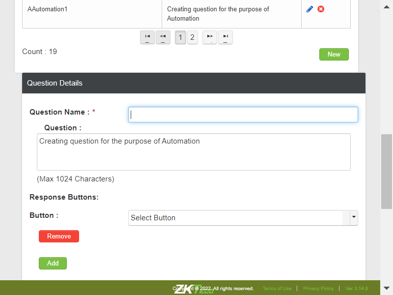To verify whether User is able to Edit the Questionscom.zkteco.cirrusdcs.stepDefinitions.CirrusDCS.i_initialize_drivers_for_DCS_automation()Driver InitializedGiven login in to the tenant pageThen I Click on Company setup moduleThen I click on attestation moduleThen I move cursor on General AttestationThen I click on Question submoduleThen I verify whether Questions page is displayed or notThen I click on Qns page New buttonThen I Edit the QuestionThen I Enter Question NameThen I click on Response Button DropdownThen I select Response1Step skippedThen I click on Add ButtonStep skippedThen I click on Response Button DropdownStep skippedThen I select Response2Step skippedThen I click on Qnspage Save ButtonStep skippedcom.zkteco.cirrusdcs.stepDefinitions.CirrusDCS.teardown(io.cucumber.java.Scenario)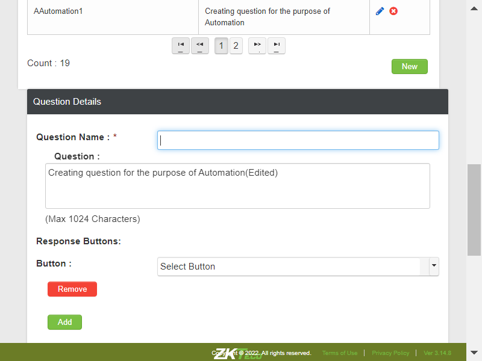To verify whether question created is reflecting in Profile pagecom.zkteco.cirrusdcs.stepDefinitions.CirrusDCS.i_initialize_drivers_for_DCS_automation()Driver InitializedGiven login in to the tenant pageThen I Click on Company setup moduleThen I click on attestation moduleThen I move cursor on General AttestationThen I click on Profile Sub moduleThen I click on profile New ButtonThen I click on Question1 dropdownThen I verify whether required question is reflected in dropdown listTo verify whether User is able to Delete the Questioncom.zkteco.cirrusdcs.stepDefinitions.CirrusDCS.i_initialize_drivers_for_DCS_automation()Driver InitializedGiven login in to the tenant pageThen I Click on Company setup moduleThen I click on attestation moduleThen I move cursor on General AttestationThen I click on Question submoduleThen I verify whether Questions page is displayed or notThen I Enter Question in search fieldThen I click on Search Button of Seach TFThen I verify qns ans click on Delete ButtonThen I verify whether Qns is deleted or notTo verify whether User is able to Navigate to Profile Pagecom.zkteco.cirrusdcs.stepDefinitions.CirrusDCS.i_initialize_drivers_for_DCS_automation()Driver InitializedGiven login in to the tenant pageThen I Click on Company setup moduleThen I click on attestation moduleThen I move cursor on General AttestationThen I click on Profile Sub moduleTo verify whether User is able to Add New profilecom.zkteco.cirrusdcs.stepDefinitions.CirrusDCS.i_initialize_drivers_for_DCS_automation()Driver InitializedGiven login in to the tenant pageThen I Click on Company setup moduleThen I click on attestation moduleThen I move cursor on General AttestationThen I click on Profile Sub moduleThen I click on profile New ButtonStep skippedThen I Enter profile NameStep skippedThen I Enter profile DescriptionStep skippedThen I click on Question1 dropdownStep skippedThen I select the required question from dropdownStep skippedThen I click on Map_Clock Data Field dropdownStep skippedThen I select the MaMap_Clock DataStep skippedThen I click on profile save ButtonStep skippedThen I verify whether Created new profile is listed in Profile listStep skippedcom.zkteco.cirrusdcs.stepDefinitions.CirrusDCS.teardown(io.cucumber.java.Scenario)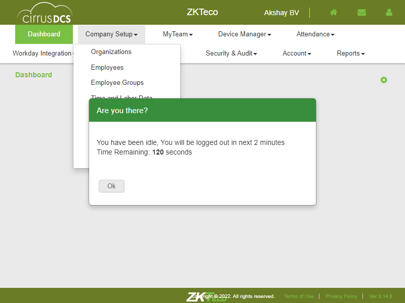To verify whether User is able to Add multiple questions for profilecom.zkteco.cirrusdcs.stepDefinitions.CirrusDCS.i_initialize_drivers_for_DCS_automation()Given login in to the tenant pageStep skippedThen I Click on Company setup moduleStep skippedThen I click on attestation moduleStep skippedThen I move cursor on General AttestationStep skippedThen I click on Profile Sub moduleStep skippedThen I click on profile New ButtonStep skippedThen I Enter profile Name with 2 QnsStep skippedThen I Enter profile DescriptionStep skippedThen I click on Question1 dropdownStep skippedThen I select the required question from dropdownStep skippedThen I click on Map_Clock Data Field dropdownStep skippedThen I select the MaMap_Clock DataStep skippedThen I Enter value for setvalue TF of Qns1 Yes ButtonStep skippedThen I click on action dropdown of Qns1 Yes ButtonStep skippedThen I select the Action of Yes Button of Qns1Step skippedThen I Enter value for setvalue TF of Qns1 No ButtonStep skippedThen I click on action dropdown of Qns1 No ButtonStep skippedThen I select the Action of No Button of Qns1Step skippedThen I click on Qns Add ButtonStep skippedThen I click on Question2 dropdownStep skippedThen I select the required 2nd question from dropdownStep skippedThen I click on Map_Clock Data2 Field dropdownStep skippedThen I select the MaMap_Clock2 DataStep skippedThen I click on Link to Question DropdownStep skippedThen I select the Qns to be linkedStep skippedThen I click on Link to Button DropdownStep skippedThen I select Link ButtonStep skippedThen I click on profile save ButtonStep skippedThen I verify whether Created new profile is listed in Profile listStep skippedcom.zkteco.cirrusdcs.stepDefinitions.CirrusDCS.teardown(io.cucumber.java.Scenario)To Edit the Profilecom.zkteco.cirrusdcs.stepDefinitions.CirrusDCS.i_initialize_drivers_for_DCS_automation()Given login in to the tenant pageStep skippedThen I Click on Company setup moduleStep skippedThen I click on attestation moduleStep skippedThen I move cursor on General AttestationStep skippedThen I click on Profile Sub moduleStep skippedThen I Search the Profile need to be EditedStep skippedThen I click on Edit Button of the profileStep skippedThen I Edit the profileStep skippedThen I click on profile save ButtonStep skippedThen I Verify whether Edited profile is updatedStep skippedcom.zkteco.cirrusdcs.stepDefinitions.CirrusDCS.teardown(io.cucumber.java.Scenario)To verify whether User should be able to Delete the Profilecom.zkteco.cirrusdcs.stepDefinitions.CirrusDCS.i_initialize_drivers_for_DCS_automation()Given login in to the tenant pageStep skippedThen I Click on Company setup moduleStep skippedThen I click on attestation moduleStep skippedThen I move cursor on General AttestationStep skippedThen I click on Profile Sub moduleStep skippedThen I Search the Profile need to be DeletedStep skippedThen I click on Delete Button of the profileStep skippedThen I verify whether profile is DeletedStep skippedcom.zkteco.cirrusdcs.stepDefinitions.CirrusDCS.teardown(io.cucumber.java.Scenario)
-
@CirrusDCS
57 tests
42 14@CirrusDCS
42 passed 14 failedStatus Timestamp TestName 18:19:44 PM CirrusDCS 18:19:44 PM To navigate to organization page CirrusDCS.To navigate to organization page18:19:56 PM To verify whether User is able to Select organization Type CirrusDCS.To verify whether User is able to Select organization Type18:20:05 PM To verify whether User is able to view organization details CirrusDCS.To verify whether User is able to view organization details18:20:14 PM To verify whether User is able to search organization CirrusDCS.To verify whether User is able to search organization18:20:21 PM To verify whether User is able to navigate to Employees page CirrusDCS.To verify whether User is able to navigate to Employees page18:20:29 PM To verify whether User is able to view Employees in Employee Details Table CirrusDCS.To verify whether User is able to view Employees in Employee Details Table18:20:35 PM To verify whether User is able to search Employee CirrusDCS.To verify whether User is able to search Employee18:20:49 PM To verify whether User is able to search Active Employees CirrusDCS.To verify whether User is able to search Active Employees18:21:04 PM To verify whether User is able to search inactive Employees CirrusDCS.To verify whether User is able to search inactive Employees18:21:09 PM To verify whether User is able to Search Employee by Advance search CirrusDCS.To verify whether User is able to Search Employee by Advance search18:21:28 PM To verify whether all field of Employee basic information is present CirrusDCS.To verify whether all field of Employee basic information is present18:21:38 PM To verify whether User is able view Employee Basic information CirrusDCS.To verify whether User is able view Employee Basic information18:21:50 PM To verify whether User is able to Reload Employee CirrusDCS.To verify whether User is able to Reload Employee18:22:02 PM To verify whether User is able to Inactivate the Employee CirrusDCS.To verify whether User is able to Inactivate the Employee18:22:14 PM To verify whether User is able to sync inactivated employee to the Device CirrusDCS.To verify whether User is able to sync inactivated employee to the Device18:22:53 PM To verify whether User can activate the Employee CirrusDCS.To verify whether User can activate the Employee18:23:09 PM To verify whether User is able to view Employee Attendence Information CirrusDCS.To verify whether User is able to view Employee Attendence Information18:23:28 PM To verify whether User is able to make Changes for Employee CirrusDCS.To verify whether User is able to make Changes for Employee18:23:40 PM TC_08: Verify whether User is able to Sync the Selected Employees to the clock CirrusDCS.TC_08: Verify whether User is able to Sync the Selected Employees to the clock18:24:11 PM To verify whether User is able to View Employee Assigned Device CirrusDCS.To verify whether User is able to View Employee Assigned Device18:24:33 PM To verify whether User is able to Drop Assigned device for Employee CirrusDCS.To verify whether User is able to Drop Assigned device for Employee18:24:51 PM To verify whether User is able to Navigate to Employee groups CirrusDCS.To verify whether User is able to Navigate to Employee groups18:24:58 PM To verify whether User is able Create New Employee Group CirrusDCS.To verify whether User is able Create New Employee Group18:25:12 PM To verify whether User is able to Edit the Group details CirrusDCS.To verify whether User is able to Edit the Group details18:25:27 PM To verify whether User is able to Add employee to the Group CirrusDCS.To verify whether User is able to Add employee to the Group18:26:18 PM To verify whether User is able to remove Employee from the group CirrusDCS.To verify whether User is able to remove Employee from the group18:28:21 PM To verify whether User is able to load employee CirrusDCS.To verify whether User is able to load employee18:28:44 PM To verify whether User is able to View Group Details CirrusDCS.To verify whether User is able to View Group Details18:28:57 PM To Delete Employee Group CirrusDCS.To Delete Employee Group18:29:11 PM To verify whether User is able to Navigate to Time Off type pay code CirrusDCS.To verify whether User is able to Navigate to Time Off type pay code18:29:15 PM To verify whether User is able to Add individual code CirrusDCS.To verify whether User is able to Add individual code18:29:21 PM To verify whether User is able to Add code with Unit as Day CirrusDCS.To verify whether User is able to Add code with Unit as Day18:29:27 PM To verify whether User is able to Add code with Unit as Hour CirrusDCS.To verify whether User is able to Add code with Unit as Hour18:29:32 PM To verify whether User is able to Add code with "Time off Type" as Both CirrusDCS.To verify whether User is able to Add code with "Time off Type" as Both18:29:38 PM To verify whether User is able to Add code with "Time off Type" as Full CirrusDCS.To verify whether User is able to Add code with "Time off Type" as Full18:29:43 PM To verify whether User is able to Add code with "Time off Type" as Partial CirrusDCS.To verify whether User is able to Add code with "Time off Type" as Partial18:29:49 PM To verify whether User is able to Add code with include weekend CirrusDCS.To verify whether User is able to Add code with include weekend18:29:55 PM To verify whether User is able to Add pay code to new Group CirrusDCS.To verify whether User is able to Add pay code to new Group18:30:00 PM To verify whether User is able to navigate to Bio-Attestation page CirrusDCS.To verify whether User is able to navigate to Bio-Attestation page18:30:05 PM To verify whether User is able to Add New Face type Bio-Attestation CirrusDCS.To verify whether User is able to Add New Face type Bio-Attestation18:30:16 PM To verify whether User is able to Add New Fingerprint type Bio-Attestation CirrusDCS.To verify whether User is able to Add New Fingerprint type Bio-Attestation18:30:29 PM To verify whether User is able to Add new Bio-Attestaton with language as English CirrusDCS.To verify whether User is able to Add new Bio-Attestaton with language as English18:30:40 PM To verify whether User is able to Add new Bio-Attestaton with with multiple language CirrusDCS.To verify whether User is able to Add new Bio-Attestaton with with multiple language18:30:56 PM To verify whehther User is able to Edit the Bio-Attestation CirrusDCS.To verify whehther User is able to Edit the Bio-Attestation18:31:33 PM To verify whether User is able to Delete the Bio-Attestaion CirrusDCS.To verify whether User is able to Delete the Bio-Attestaion18:31:38 PM To verify whether User is able to search the Bio-Attestaion created CirrusDCS.To verify whether User is able to search the Bio-Attestaion created18:31:42 PM To verify whether User is able to Navigate to Questions page CirrusDCS.To verify whether User is able to Navigate to Questions page18:31:47 PM To verify whether User is able to Add New Question CirrusDCS.To verify whether User is able to Add New Question18:31:57 PM To verify whether User is able to Edit the Questions CirrusDCS.To verify whether User is able to Edit the Questions18:32:07 PM To verify whether question created is reflecting in Profile page CirrusDCS.To verify whether question created is reflecting in Profile page18:32:14 PM To verify whether User is able to Delete the Question CirrusDCS.To verify whether User is able to Delete the Question18:32:20 PM To verify whether User is able to Navigate to Profile Page CirrusDCS.To verify whether User is able to Navigate to Profile Page18:32:32 PM To verify whether User is able to Add New profile CirrusDCS.To verify whether User is able to Add New profile09:42:30 AM To verify whether User is able to Add multiple questions for profile CirrusDCS.To verify whether User is able to Add multiple questions for profile09:42:32 AM To Edit the Profile CirrusDCS.To Edit the Profile09:42:32 AM To verify whether User should be able to Delete the Profile CirrusDCS.To verify whether User should be able to Delete the Profile -
@CompanySetup_TC_01
1 tests
1@CompanySetup_TC_01
1 passedStatus Timestamp TestName 18:19:44 PM To navigate to organization page CirrusDCS.To navigate to organization page -
@smoke
4 tests
4@smoke
4 passedStatus Timestamp TestName 18:19:44 PM To navigate to organization page CirrusDCS.To navigate to organization page18:24:51 PM To verify whether User is able to Navigate to Employee groups CirrusDCS.To verify whether User is able to Navigate to Employee groups18:28:44 PM To verify whether User is able to View Group Details CirrusDCS.To verify whether User is able to View Group Details18:29:11 PM To verify whether User is able to Navigate to Time Off type pay code CirrusDCS.To verify whether User is able to Navigate to Time Off type pay code -
@CompanySetup
56 tests
42 14@CompanySetup
42 passed 14 failedStatus Timestamp TestName 18:19:44 PM To navigate to organization page CirrusDCS.To navigate to organization page18:19:56 PM To verify whether User is able to Select organization Type CirrusDCS.To verify whether User is able to Select organization Type18:20:05 PM To verify whether User is able to view organization details CirrusDCS.To verify whether User is able to view organization details18:20:14 PM To verify whether User is able to search organization CirrusDCS.To verify whether User is able to search organization18:20:21 PM To verify whether User is able to navigate to Employees page CirrusDCS.To verify whether User is able to navigate to Employees page18:20:29 PM To verify whether User is able to view Employees in Employee Details Table CirrusDCS.To verify whether User is able to view Employees in Employee Details Table18:20:35 PM To verify whether User is able to search Employee CirrusDCS.To verify whether User is able to search Employee18:20:49 PM To verify whether User is able to search Active Employees CirrusDCS.To verify whether User is able to search Active Employees18:21:04 PM To verify whether User is able to search inactive Employees CirrusDCS.To verify whether User is able to search inactive Employees18:21:09 PM To verify whether User is able to Search Employee by Advance search CirrusDCS.To verify whether User is able to Search Employee by Advance search18:21:28 PM To verify whether all field of Employee basic information is present CirrusDCS.To verify whether all field of Employee basic information is present18:21:38 PM To verify whether User is able view Employee Basic information CirrusDCS.To verify whether User is able view Employee Basic information18:21:50 PM To verify whether User is able to Reload Employee CirrusDCS.To verify whether User is able to Reload Employee18:22:02 PM To verify whether User is able to Inactivate the Employee CirrusDCS.To verify whether User is able to Inactivate the Employee18:22:14 PM To verify whether User is able to sync inactivated employee to the Device CirrusDCS.To verify whether User is able to sync inactivated employee to the Device18:22:53 PM To verify whether User can activate the Employee CirrusDCS.To verify whether User can activate the Employee18:23:09 PM To verify whether User is able to view Employee Attendence Information CirrusDCS.To verify whether User is able to view Employee Attendence Information18:23:28 PM To verify whether User is able to make Changes for Employee CirrusDCS.To verify whether User is able to make Changes for Employee18:23:40 PM TC_08: Verify whether User is able to Sync the Selected Employees to the clock CirrusDCS.TC_08: Verify whether User is able to Sync the Selected Employees to the clock18:24:11 PM To verify whether User is able to View Employee Assigned Device CirrusDCS.To verify whether User is able to View Employee Assigned Device18:24:33 PM To verify whether User is able to Drop Assigned device for Employee CirrusDCS.To verify whether User is able to Drop Assigned device for Employee18:24:51 PM To verify whether User is able to Navigate to Employee groups CirrusDCS.To verify whether User is able to Navigate to Employee groups18:24:58 PM To verify whether User is able Create New Employee Group CirrusDCS.To verify whether User is able Create New Employee Group18:25:12 PM To verify whether User is able to Edit the Group details CirrusDCS.To verify whether User is able to Edit the Group details18:25:27 PM To verify whether User is able to Add employee to the Group CirrusDCS.To verify whether User is able to Add employee to the Group18:26:18 PM To verify whether User is able to remove Employee from the group CirrusDCS.To verify whether User is able to remove Employee from the group18:28:21 PM To verify whether User is able to load employee CirrusDCS.To verify whether User is able to load employee18:28:44 PM To verify whether User is able to View Group Details CirrusDCS.To verify whether User is able to View Group Details18:28:57 PM To Delete Employee Group CirrusDCS.To Delete Employee Group18:29:11 PM To verify whether User is able to Navigate to Time Off type pay code CirrusDCS.To verify whether User is able to Navigate to Time Off type pay code18:29:15 PM To verify whether User is able to Add individual code CirrusDCS.To verify whether User is able to Add individual code18:29:21 PM To verify whether User is able to Add code with Unit as Day CirrusDCS.To verify whether User is able to Add code with Unit as Day18:29:27 PM To verify whether User is able to Add code with Unit as Hour CirrusDCS.To verify whether User is able to Add code with Unit as Hour18:29:32 PM To verify whether User is able to Add code with "Time off Type" as Both CirrusDCS.To verify whether User is able to Add code with "Time off Type" as Both18:29:38 PM To verify whether User is able to Add code with "Time off Type" as Full CirrusDCS.To verify whether User is able to Add code with "Time off Type" as Full18:29:43 PM To verify whether User is able to Add code with "Time off Type" as Partial CirrusDCS.To verify whether User is able to Add code with "Time off Type" as Partial18:29:49 PM To verify whether User is able to Add code with include weekend CirrusDCS.To verify whether User is able to Add code with include weekend18:29:55 PM To verify whether User is able to Add pay code to new Group CirrusDCS.To verify whether User is able to Add pay code to new Group18:30:00 PM To verify whether User is able to navigate to Bio-Attestation page CirrusDCS.To verify whether User is able to navigate to Bio-Attestation page18:30:05 PM To verify whether User is able to Add New Face type Bio-Attestation CirrusDCS.To verify whether User is able to Add New Face type Bio-Attestation18:30:16 PM To verify whether User is able to Add New Fingerprint type Bio-Attestation CirrusDCS.To verify whether User is able to Add New Fingerprint type Bio-Attestation18:30:29 PM To verify whether User is able to Add new Bio-Attestaton with language as English CirrusDCS.To verify whether User is able to Add new Bio-Attestaton with language as English18:30:40 PM To verify whether User is able to Add new Bio-Attestaton with with multiple language CirrusDCS.To verify whether User is able to Add new Bio-Attestaton with with multiple language18:30:56 PM To verify whehther User is able to Edit the Bio-Attestation CirrusDCS.To verify whehther User is able to Edit the Bio-Attestation18:31:33 PM To verify whether User is able to Delete the Bio-Attestaion CirrusDCS.To verify whether User is able to Delete the Bio-Attestaion18:31:38 PM To verify whether User is able to search the Bio-Attestaion created CirrusDCS.To verify whether User is able to search the Bio-Attestaion created18:31:42 PM To verify whether User is able to Navigate to Questions page CirrusDCS.To verify whether User is able to Navigate to Questions page18:31:47 PM To verify whether User is able to Add New Question CirrusDCS.To verify whether User is able to Add New Question18:31:57 PM To verify whether User is able to Edit the Questions CirrusDCS.To verify whether User is able to Edit the Questions18:32:07 PM To verify whether question created is reflecting in Profile page CirrusDCS.To verify whether question created is reflecting in Profile page18:32:14 PM To verify whether User is able to Delete the Question CirrusDCS.To verify whether User is able to Delete the Question18:32:20 PM To verify whether User is able to Navigate to Profile Page CirrusDCS.To verify whether User is able to Navigate to Profile Page18:32:32 PM To verify whether User is able to Add New profile CirrusDCS.To verify whether User is able to Add New profile09:42:30 AM To verify whether User is able to Add multiple questions for profile CirrusDCS.To verify whether User is able to Add multiple questions for profile09:42:32 AM To Edit the Profile CirrusDCS.To Edit the Profile09:42:32 AM To verify whether User should be able to Delete the Profile CirrusDCS.To verify whether User should be able to Delete the Profile -
@DCSFullsuite
56 tests
42 14@DCSFullsuite
42 passed 14 failedStatus Timestamp TestName 18:19:44 PM To navigate to organization page CirrusDCS.To navigate to organization page18:19:56 PM To verify whether User is able to Select organization Type CirrusDCS.To verify whether User is able to Select organization Type18:20:05 PM To verify whether User is able to view organization details CirrusDCS.To verify whether User is able to view organization details18:20:14 PM To verify whether User is able to search organization CirrusDCS.To verify whether User is able to search organization18:20:21 PM To verify whether User is able to navigate to Employees page CirrusDCS.To verify whether User is able to navigate to Employees page18:20:29 PM To verify whether User is able to view Employees in Employee Details Table CirrusDCS.To verify whether User is able to view Employees in Employee Details Table18:20:35 PM To verify whether User is able to search Employee CirrusDCS.To verify whether User is able to search Employee18:20:49 PM To verify whether User is able to search Active Employees CirrusDCS.To verify whether User is able to search Active Employees18:21:04 PM To verify whether User is able to search inactive Employees CirrusDCS.To verify whether User is able to search inactive Employees18:21:09 PM To verify whether User is able to Search Employee by Advance search CirrusDCS.To verify whether User is able to Search Employee by Advance search18:21:28 PM To verify whether all field of Employee basic information is present CirrusDCS.To verify whether all field of Employee basic information is present18:21:38 PM To verify whether User is able view Employee Basic information CirrusDCS.To verify whether User is able view Employee Basic information18:21:50 PM To verify whether User is able to Reload Employee CirrusDCS.To verify whether User is able to Reload Employee18:22:02 PM To verify whether User is able to Inactivate the Employee CirrusDCS.To verify whether User is able to Inactivate the Employee18:22:14 PM To verify whether User is able to sync inactivated employee to the Device CirrusDCS.To verify whether User is able to sync inactivated employee to the Device18:22:53 PM To verify whether User can activate the Employee CirrusDCS.To verify whether User can activate the Employee18:23:09 PM To verify whether User is able to view Employee Attendence Information CirrusDCS.To verify whether User is able to view Employee Attendence Information18:23:28 PM To verify whether User is able to make Changes for Employee CirrusDCS.To verify whether User is able to make Changes for Employee18:23:40 PM TC_08: Verify whether User is able to Sync the Selected Employees to the clock CirrusDCS.TC_08: Verify whether User is able to Sync the Selected Employees to the clock18:24:11 PM To verify whether User is able to View Employee Assigned Device CirrusDCS.To verify whether User is able to View Employee Assigned Device18:24:33 PM To verify whether User is able to Drop Assigned device for Employee CirrusDCS.To verify whether User is able to Drop Assigned device for Employee18:24:51 PM To verify whether User is able to Navigate to Employee groups CirrusDCS.To verify whether User is able to Navigate to Employee groups18:24:58 PM To verify whether User is able Create New Employee Group CirrusDCS.To verify whether User is able Create New Employee Group18:25:12 PM To verify whether User is able to Edit the Group details CirrusDCS.To verify whether User is able to Edit the Group details18:25:27 PM To verify whether User is able to Add employee to the Group CirrusDCS.To verify whether User is able to Add employee to the Group18:26:18 PM To verify whether User is able to remove Employee from the group CirrusDCS.To verify whether User is able to remove Employee from the group18:28:21 PM To verify whether User is able to load employee CirrusDCS.To verify whether User is able to load employee18:28:44 PM To verify whether User is able to View Group Details CirrusDCS.To verify whether User is able to View Group Details18:28:57 PM To Delete Employee Group CirrusDCS.To Delete Employee Group18:29:11 PM To verify whether User is able to Navigate to Time Off type pay code CirrusDCS.To verify whether User is able to Navigate to Time Off type pay code18:29:15 PM To verify whether User is able to Add individual code CirrusDCS.To verify whether User is able to Add individual code18:29:21 PM To verify whether User is able to Add code with Unit as Day CirrusDCS.To verify whether User is able to Add code with Unit as Day18:29:27 PM To verify whether User is able to Add code with Unit as Hour CirrusDCS.To verify whether User is able to Add code with Unit as Hour18:29:32 PM To verify whether User is able to Add code with "Time off Type" as Both CirrusDCS.To verify whether User is able to Add code with "Time off Type" as Both18:29:38 PM To verify whether User is able to Add code with "Time off Type" as Full CirrusDCS.To verify whether User is able to Add code with "Time off Type" as Full18:29:43 PM To verify whether User is able to Add code with "Time off Type" as Partial CirrusDCS.To verify whether User is able to Add code with "Time off Type" as Partial18:29:49 PM To verify whether User is able to Add code with include weekend CirrusDCS.To verify whether User is able to Add code with include weekend18:29:55 PM To verify whether User is able to Add pay code to new Group CirrusDCS.To verify whether User is able to Add pay code to new Group18:30:00 PM To verify whether User is able to navigate to Bio-Attestation page CirrusDCS.To verify whether User is able to navigate to Bio-Attestation page18:30:05 PM To verify whether User is able to Add New Face type Bio-Attestation CirrusDCS.To verify whether User is able to Add New Face type Bio-Attestation18:30:16 PM To verify whether User is able to Add New Fingerprint type Bio-Attestation CirrusDCS.To verify whether User is able to Add New Fingerprint type Bio-Attestation18:30:29 PM To verify whether User is able to Add new Bio-Attestaton with language as English CirrusDCS.To verify whether User is able to Add new Bio-Attestaton with language as English18:30:40 PM To verify whether User is able to Add new Bio-Attestaton with with multiple language CirrusDCS.To verify whether User is able to Add new Bio-Attestaton with with multiple language18:30:56 PM To verify whehther User is able to Edit the Bio-Attestation CirrusDCS.To verify whehther User is able to Edit the Bio-Attestation18:31:33 PM To verify whether User is able to Delete the Bio-Attestaion CirrusDCS.To verify whether User is able to Delete the Bio-Attestaion18:31:38 PM To verify whether User is able to search the Bio-Attestaion created CirrusDCS.To verify whether User is able to search the Bio-Attestaion created18:31:42 PM To verify whether User is able to Navigate to Questions page CirrusDCS.To verify whether User is able to Navigate to Questions page18:31:47 PM To verify whether User is able to Add New Question CirrusDCS.To verify whether User is able to Add New Question18:31:57 PM To verify whether User is able to Edit the Questions CirrusDCS.To verify whether User is able to Edit the Questions18:32:07 PM To verify whether question created is reflecting in Profile page CirrusDCS.To verify whether question created is reflecting in Profile page18:32:14 PM To verify whether User is able to Delete the Question CirrusDCS.To verify whether User is able to Delete the Question18:32:20 PM To verify whether User is able to Navigate to Profile Page CirrusDCS.To verify whether User is able to Navigate to Profile Page18:32:32 PM To verify whether User is able to Add New profile CirrusDCS.To verify whether User is able to Add New profile09:42:30 AM To verify whether User is able to Add multiple questions for profile CirrusDCS.To verify whether User is able to Add multiple questions for profile09:42:32 AM To Edit the Profile CirrusDCS.To Edit the Profile09:42:32 AM To verify whether User should be able to Delete the Profile CirrusDCS.To verify whether User should be able to Delete the Profile -
@CompanySetup_TC_02
1 tests
1@CompanySetup_TC_02
1 passedStatus Timestamp TestName 18:19:56 PM To verify whether User is able to Select organization Type CirrusDCS.To verify whether User is able to Select organization Type -
@Regression
50 tests
36 14@Regression
36 passed 14 failedStatus Timestamp TestName 18:19:56 PM To verify whether User is able to Select organization Type CirrusDCS.To verify whether User is able to Select organization Type18:20:05 PM To verify whether User is able to view organization details CirrusDCS.To verify whether User is able to view organization details18:20:14 PM To verify whether User is able to search organization CirrusDCS.To verify whether User is able to search organization18:20:21 PM To verify whether User is able to navigate to Employees page CirrusDCS.To verify whether User is able to navigate to Employees page18:20:29 PM To verify whether User is able to view Employees in Employee Details Table CirrusDCS.To verify whether User is able to view Employees in Employee Details Table18:20:35 PM To verify whether User is able to search Employee CirrusDCS.To verify whether User is able to search Employee18:20:49 PM To verify whether User is able to search Active Employees CirrusDCS.To verify whether User is able to search Active Employees18:21:04 PM To verify whether User is able to search inactive Employees CirrusDCS.To verify whether User is able to search inactive Employees18:21:09 PM To verify whether User is able to Search Employee by Advance search CirrusDCS.To verify whether User is able to Search Employee by Advance search18:21:28 PM To verify whether all field of Employee basic information is present CirrusDCS.To verify whether all field of Employee basic information is present18:21:38 PM To verify whether User is able view Employee Basic information CirrusDCS.To verify whether User is able view Employee Basic information18:21:50 PM To verify whether User is able to Reload Employee CirrusDCS.To verify whether User is able to Reload Employee18:22:02 PM To verify whether User is able to Inactivate the Employee CirrusDCS.To verify whether User is able to Inactivate the Employee18:22:14 PM To verify whether User is able to sync inactivated employee to the Device CirrusDCS.To verify whether User is able to sync inactivated employee to the Device18:22:53 PM To verify whether User can activate the Employee CirrusDCS.To verify whether User can activate the Employee18:23:09 PM To verify whether User is able to view Employee Attendence Information CirrusDCS.To verify whether User is able to view Employee Attendence Information18:23:28 PM To verify whether User is able to make Changes for Employee CirrusDCS.To verify whether User is able to make Changes for Employee18:23:40 PM TC_08: Verify whether User is able to Sync the Selected Employees to the clock CirrusDCS.TC_08: Verify whether User is able to Sync the Selected Employees to the clock18:24:11 PM To verify whether User is able to View Employee Assigned Device CirrusDCS.To verify whether User is able to View Employee Assigned Device18:24:33 PM To verify whether User is able to Drop Assigned device for Employee CirrusDCS.To verify whether User is able to Drop Assigned device for Employee18:24:58 PM To verify whether User is able Create New Employee Group CirrusDCS.To verify whether User is able Create New Employee Group18:25:12 PM To verify whether User is able to Edit the Group details CirrusDCS.To verify whether User is able to Edit the Group details18:25:27 PM To verify whether User is able to Add employee to the Group CirrusDCS.To verify whether User is able to Add employee to the Group18:26:18 PM To verify whether User is able to remove Employee from the group CirrusDCS.To verify whether User is able to remove Employee from the group18:28:21 PM To verify whether User is able to load employee CirrusDCS.To verify whether User is able to load employee18:28:57 PM To Delete Employee Group CirrusDCS.To Delete Employee Group18:29:15 PM To verify whether User is able to Add individual code CirrusDCS.To verify whether User is able to Add individual code18:29:21 PM To verify whether User is able to Add code with Unit as Day CirrusDCS.To verify whether User is able to Add code with Unit as Day18:29:27 PM To verify whether User is able to Add code with Unit as Hour CirrusDCS.To verify whether User is able to Add code with Unit as Hour18:29:32 PM To verify whether User is able to Add code with "Time off Type" as Both CirrusDCS.To verify whether User is able to Add code with "Time off Type" as Both18:29:38 PM To verify whether User is able to Add code with "Time off Type" as Full CirrusDCS.To verify whether User is able to Add code with "Time off Type" as Full18:29:43 PM To verify whether User is able to Add code with "Time off Type" as Partial CirrusDCS.To verify whether User is able to Add code with "Time off Type" as Partial18:29:49 PM To verify whether User is able to Add code with include weekend CirrusDCS.To verify whether User is able to Add code with include weekend18:29:55 PM To verify whether User is able to Add pay code to new Group CirrusDCS.To verify whether User is able to Add pay code to new Group18:30:00 PM To verify whether User is able to navigate to Bio-Attestation page CirrusDCS.To verify whether User is able to navigate to Bio-Attestation page18:30:05 PM To verify whether User is able to Add New Face type Bio-Attestation CirrusDCS.To verify whether User is able to Add New Face type Bio-Attestation18:30:16 PM To verify whether User is able to Add New Fingerprint type Bio-Attestation CirrusDCS.To verify whether User is able to Add New Fingerprint type Bio-Attestation18:30:29 PM To verify whether User is able to Add new Bio-Attestaton with language as English CirrusDCS.To verify whether User is able to Add new Bio-Attestaton with language as English18:30:40 PM To verify whether User is able to Add new Bio-Attestaton with with multiple language CirrusDCS.To verify whether User is able to Add new Bio-Attestaton with with multiple language18:30:56 PM To verify whehther User is able to Edit the Bio-Attestation CirrusDCS.To verify whehther User is able to Edit the Bio-Attestation18:31:33 PM To verify whether User is able to Delete the Bio-Attestaion CirrusDCS.To verify whether User is able to Delete the Bio-Attestaion18:31:38 PM To verify whether User is able to search the Bio-Attestaion created CirrusDCS.To verify whether User is able to search the Bio-Attestaion created18:31:47 PM To verify whether User is able to Add New Question CirrusDCS.To verify whether User is able to Add New Question18:31:57 PM To verify whether User is able to Edit the Questions CirrusDCS.To verify whether User is able to Edit the Questions18:32:07 PM To verify whether question created is reflecting in Profile page CirrusDCS.To verify whether question created is reflecting in Profile page18:32:14 PM To verify whether User is able to Delete the Question CirrusDCS.To verify whether User is able to Delete the Question18:32:32 PM To verify whether User is able to Add New profile CirrusDCS.To verify whether User is able to Add New profile09:42:30 AM To verify whether User is able to Add multiple questions for profile CirrusDCS.To verify whether User is able to Add multiple questions for profile09:42:32 AM To Edit the Profile CirrusDCS.To Edit the Profile09:42:32 AM To verify whether User should be able to Delete the Profile CirrusDCS.To verify whether User should be able to Delete the Profile -
@CompanySetup_TC_03
1 tests
1@CompanySetup_TC_03
1 passedStatus Timestamp TestName 18:20:05 PM To verify whether User is able to view organization details CirrusDCS.To verify whether User is able to view organization details -
@CompanySetup_TC_04
1 tests
1@CompanySetup_TC_04
1 passedStatus Timestamp TestName 18:20:14 PM To verify whether User is able to search organization CirrusDCS.To verify whether User is able to search organization -
@companySetup_TC_05
1 tests
1@companySetup_TC_05
1 passedStatus Timestamp TestName 18:20:21 PM To verify whether User is able to navigate to Employees page CirrusDCS.To verify whether User is able to navigate to Employees page -
@companySetup_TC_06
1 tests
1@companySetup_TC_06
1 passedStatus Timestamp TestName 18:20:29 PM To verify whether User is able to view Employees in Employee Details Table CirrusDCS.To verify whether User is able to view Employees in Employee Details Table -
@companySetup_TC_07
1 tests
1@companySetup_TC_07
1 passedStatus Timestamp TestName 18:20:35 PM To verify whether User is able to search Employee CirrusDCS.To verify whether User is able to search Employee -
@companySetup_TC_08
1 tests
1@companySetup_TC_08
1 passedStatus Timestamp TestName 18:20:49 PM To verify whether User is able to search Active Employees CirrusDCS.To verify whether User is able to search Active Employees -
@companySetup_TC_09
1 tests
1@companySetup_TC_09
1 failedStatus Timestamp TestName 18:21:04 PM To verify whether User is able to search inactive Employees CirrusDCS.To verify whether User is able to search inactive Employees -
@companySetup_TC_10
1 tests
1@companySetup_TC_10
1 passedStatus Timestamp TestName 18:21:09 PM To verify whether User is able to Search Employee by Advance search CirrusDCS.To verify whether User is able to Search Employee by Advance search -
@companySetup_TC_12
1 tests
1@companySetup_TC_12
1 passedStatus Timestamp TestName 18:21:28 PM To verify whether all field of Employee basic information is present CirrusDCS.To verify whether all field of Employee basic information is present -
@companySetup_TC_13
1 tests
1@companySetup_TC_13
1 passedStatus Timestamp TestName 18:21:38 PM To verify whether User is able view Employee Basic information CirrusDCS.To verify whether User is able view Employee Basic information -
@companySetup_TC_14
1 tests
1@companySetup_TC_14
1 passedStatus Timestamp TestName 18:21:50 PM To verify whether User is able to Reload Employee CirrusDCS.To verify whether User is able to Reload Employee -
@companySetup_TC_15
1 tests
1@companySetup_TC_15
1 failedStatus Timestamp TestName 18:22:02 PM To verify whether User is able to Inactivate the Employee CirrusDCS.To verify whether User is able to Inactivate the Employee -
@companySetup_TC_17
1 tests
1@companySetup_TC_17
1 passedStatus Timestamp TestName 18:22:14 PM To verify whether User is able to sync inactivated employee to the Device CirrusDCS.To verify whether User is able to sync inactivated employee to the Device -
@companySetup_TC_18
1 tests
1@companySetup_TC_18
1 passedStatus Timestamp TestName 18:22:53 PM To verify whether User can activate the Employee CirrusDCS.To verify whether User can activate the Employee -
@companySetup_TC_19
1 tests
1@companySetup_TC_19
1 passedStatus Timestamp TestName 18:23:09 PM To verify whether User is able to view Employee Attendence Information CirrusDCS.To verify whether User is able to view Employee Attendence Information -
@companySetup_TC_20
1 tests
1@companySetup_TC_20
1 passedStatus Timestamp TestName 18:23:28 PM To verify whether User is able to make Changes for Employee CirrusDCS.To verify whether User is able to make Changes for Employee -
@companySetup_TC_201
1 tests
1@companySetup_TC_201
1 passedStatus Timestamp TestName 18:23:40 PM TC_08: Verify whether User is able to Sync the Selected Employees to the clock CirrusDCS.TC_08: Verify whether User is able to Sync the Selected Employees to the clock -
@DeviceManager
1 tests
1@DeviceManager
1 passedStatus Timestamp TestName 18:23:40 PM TC_08: Verify whether User is able to Sync the Selected Employees to the clock CirrusDCS.TC_08: Verify whether User is able to Sync the Selected Employees to the clock -
@DevicedataSync
1 tests
1@DevicedataSync
1 passedStatus Timestamp TestName 18:23:40 PM TC_08: Verify whether User is able to Sync the Selected Employees to the clock CirrusDCS.TC_08: Verify whether User is able to Sync the Selected Employees to the clock -
@companySetup_TC_22
1 tests
1@companySetup_TC_22
1 passedStatus Timestamp TestName 18:24:11 PM To verify whether User is able to View Employee Assigned Device CirrusDCS.To verify whether User is able to View Employee Assigned Device -
@companySetup_TC_23
1 tests
1@companySetup_TC_23
1 passedStatus Timestamp TestName 18:24:33 PM To verify whether User is able to Drop Assigned device for Employee CirrusDCS.To verify whether User is able to Drop Assigned device for Employee -
@companySetup_TC_24
1 tests
1@companySetup_TC_24
1 passedStatus Timestamp TestName 18:24:51 PM To verify whether User is able to Navigate to Employee groups CirrusDCS.To verify whether User is able to Navigate to Employee groups -
@companySetup_TC_25
2 tests
2@companySetup_TC_25
2 passedStatus Timestamp TestName 18:24:58 PM To verify whether User is able Create New Employee Group CirrusDCS.To verify whether User is able Create New Employee Group18:25:12 PM To verify whether User is able to Edit the Group details CirrusDCS.To verify whether User is able to Edit the Group details -
@companySetup_TC_27
1 tests
1@companySetup_TC_27
1 passedStatus Timestamp TestName 18:25:27 PM To verify whether User is able to Add employee to the Group CirrusDCS.To verify whether User is able to Add employee to the Group -
@companySetup_TC_28
1 tests
1@companySetup_TC_28
1 passedStatus Timestamp TestName 18:26:18 PM To verify whether User is able to remove Employee from the group CirrusDCS.To verify whether User is able to remove Employee from the group -
@companySetup_TC_29
1 tests
1@companySetup_TC_29
1 passedStatus Timestamp TestName 18:28:21 PM To verify whether User is able to load employee CirrusDCS.To verify whether User is able to load employee -
@companySetup_TC_30
1 tests
1@companySetup_TC_30
1 passedStatus Timestamp TestName 18:28:44 PM To verify whether User is able to View Group Details CirrusDCS.To verify whether User is able to View Group Details -
@companySetup_TC_31
1 tests
1@companySetup_TC_31
1 passedStatus Timestamp TestName 18:28:57 PM To Delete Employee Group CirrusDCS.To Delete Employee Group -
@companySetup_TC_32
1 tests
1@companySetup_TC_32
1 passedStatus Timestamp TestName 18:29:11 PM To verify whether User is able to Navigate to Time Off type pay code CirrusDCS.To verify whether User is able to Navigate to Time Off type pay code -
@companySetup_TC_34
1 tests
1@companySetup_TC_34
1 failedStatus Timestamp TestName 18:29:15 PM To verify whether User is able to Add individual code CirrusDCS.To verify whether User is able to Add individual code -
@companySetup_TC_35
1 tests
1@companySetup_TC_35
1 passedStatus Timestamp TestName 18:29:21 PM To verify whether User is able to Add code with Unit as Day CirrusDCS.To verify whether User is able to Add code with Unit as Day -
@companySetup_TC_36
1 tests
1@companySetup_TC_36
1 passedStatus Timestamp TestName 18:29:27 PM To verify whether User is able to Add code with Unit as Hour CirrusDCS.To verify whether User is able to Add code with Unit as Hour -
@companySetup_TC_37
1 tests
1@companySetup_TC_37
1 failedStatus Timestamp TestName 18:29:32 PM To verify whether User is able to Add code with "Time off Type" as Both CirrusDCS.To verify whether User is able to Add code with "Time off Type" as Both -
@companySetup_TC_38
1 tests
1@companySetup_TC_38
1 failedStatus Timestamp TestName 18:29:38 PM To verify whether User is able to Add code with "Time off Type" as Full CirrusDCS.To verify whether User is able to Add code with "Time off Type" as Full -
@companySetup_TC_39
1 tests
1@companySetup_TC_39
1 failedStatus Timestamp TestName 18:29:43 PM To verify whether User is able to Add code with "Time off Type" as Partial CirrusDCS.To verify whether User is able to Add code with "Time off Type" as Partial -
@companySetup_TC_40
1 tests
1@companySetup_TC_40
1 failedStatus Timestamp TestName 18:29:49 PM To verify whether User is able to Add code with include weekend CirrusDCS.To verify whether User is able to Add code with include weekend -
@companySetup_TC_45
1 tests
1@companySetup_TC_45
1 passedStatus Timestamp TestName 18:29:55 PM To verify whether User is able to Add pay code to new Group CirrusDCS.To verify whether User is able to Add pay code to new Group -
@companySetup_TC_52
1 tests
1@companySetup_TC_52
1 passedStatus Timestamp TestName 18:30:00 PM To verify whether User is able to navigate to Bio-Attestation page CirrusDCS.To verify whether User is able to navigate to Bio-Attestation page -
@companySetup_TC_53
1 tests
1@companySetup_TC_53
1 passedStatus Timestamp TestName 18:30:05 PM To verify whether User is able to Add New Face type Bio-Attestation CirrusDCS.To verify whether User is able to Add New Face type Bio-Attestation -
@companySetup_TC_54
1 tests
1@companySetup_TC_54
1 passedStatus Timestamp TestName 18:30:16 PM To verify whether User is able to Add New Fingerprint type Bio-Attestation CirrusDCS.To verify whether User is able to Add New Fingerprint type Bio-Attestation -
@companySetup_TC_55
1 tests
1@companySetup_TC_55
1 passedStatus Timestamp TestName 18:30:29 PM To verify whether User is able to Add new Bio-Attestaton with language as English CirrusDCS.To verify whether User is able to Add new Bio-Attestaton with language as English -
@companySetup_TC_57
1 tests
1@companySetup_TC_57
1 passedStatus Timestamp TestName 18:30:40 PM To verify whether User is able to Add new Bio-Attestaton with with multiple language CirrusDCS.To verify whether User is able to Add new Bio-Attestaton with with multiple language -
@companySetup_TC_58
1 tests
1@companySetup_TC_58
1 failedStatus Timestamp TestName 18:30:56 PM To verify whehther User is able to Edit the Bio-Attestation CirrusDCS.To verify whehther User is able to Edit the Bio-Attestation -
@companySetup_TC_59
1 tests
1@companySetup_TC_59
1 passedStatus Timestamp TestName 18:31:33 PM To verify whether User is able to Delete the Bio-Attestaion CirrusDCS.To verify whether User is able to Delete the Bio-Attestaion -
@companySetup_TC_60
1 tests
1@companySetup_TC_60
1 passedStatus Timestamp TestName 18:31:38 PM To verify whether User is able to search the Bio-Attestaion created CirrusDCS.To verify whether User is able to search the Bio-Attestaion created -
@companySetup_TC_61
1 tests
1@companySetup_TC_61
1 passedStatus Timestamp TestName 18:31:42 PM To verify whether User is able to Navigate to Questions page CirrusDCS.To verify whether User is able to Navigate to Questions page -
@Smoke
2 tests
2@Smoke
2 passedStatus Timestamp TestName 18:31:42 PM To verify whether User is able to Navigate to Questions page CirrusDCS.To verify whether User is able to Navigate to Questions page18:32:20 PM To verify whether User is able to Navigate to Profile Page CirrusDCS.To verify whether User is able to Navigate to Profile Page -
@companySetup_TC_62
1 tests
1@companySetup_TC_62
1 failedStatus Timestamp TestName 18:31:47 PM To verify whether User is able to Add New Question CirrusDCS.To verify whether User is able to Add New Question -
@companySetup_TC_63
1 tests
1@companySetup_TC_63
1 failedStatus Timestamp TestName 18:31:57 PM To verify whether User is able to Edit the Questions CirrusDCS.To verify whether User is able to Edit the Questions -
@companySetup_TC_64
1 tests
1@companySetup_TC_64
1 passedStatus Timestamp TestName 18:32:07 PM To verify whether question created is reflecting in Profile page CirrusDCS.To verify whether question created is reflecting in Profile page -
@companySetup_TC_65
1 tests
1@companySetup_TC_65
1 passedStatus Timestamp TestName 18:32:14 PM To verify whether User is able to Delete the Question CirrusDCS.To verify whether User is able to Delete the Question -
@companySetup_TC_66
1 tests
1@companySetup_TC_66
1 passedStatus Timestamp TestName 18:32:20 PM To verify whether User is able to Navigate to Profile Page CirrusDCS.To verify whether User is able to Navigate to Profile Page -
@companySetup_TC_67
1 tests
1@companySetup_TC_67
1 failedStatus Timestamp TestName 18:32:32 PM To verify whether User is able to Add New profile CirrusDCS.To verify whether User is able to Add New profile -
@companySetup_TC_68
1 tests
1@companySetup_TC_68
1 failedStatus Timestamp TestName 09:42:30 AM To verify whether User is able to Add multiple questions for profile CirrusDCS.To verify whether User is able to Add multiple questions for profile -
@companySetup_TC_69
1 tests
1@companySetup_TC_69
1 failedStatus Timestamp TestName 09:42:32 AM To Edit the Profile CirrusDCS.To Edit the Profile -
@companySetup_TC_70
1 tests
1@companySetup_TC_70
1 failedStatus Timestamp TestName 09:42:32 AM To verify whether User should be able to Delete the Profile CirrusDCS.To verify whether User should be able to Delete the Profile
-
org.junit.ComparisonFailure
2 tests
org.junit.ComparisonFailure
Status Timestamp TestName 18:21:09 PM Then I verify employee inactive status To verify whether User is able to search inactive Employees18:22:14 PM Then I verify the status changed To verify whether User is able to Inactivate the Employee -
org.openqa.selenium.StaleElementReferenceException
5 tests
org.openqa.selenium.StaleElementReferenceException
Status Timestamp TestName 18:29:20 PM Then I verify whethercode is added To verify whether User is able to Add individual code18:29:37 PM Then I verify whethercode is added To verify whether User is able to Add code with "Time off Type" as Both18:29:43 PM Then I verify whethercode is added To verify whether User is able to Add code with "Time off Type" as Full18:29:48 PM Then I verify whethercode is added To verify whether User is able to Add code with "Time off Type" as Partial18:29:55 PM Then I verify whethercode is added To verify whether User is able to Add code with include weekend -
org.openqa.selenium.NoSuchElementException
1 tests
org.openqa.selenium.NoSuchElementException
Status Timestamp TestName 18:31:02 PM Then I click on AttSave Button To verify whehther User is able to Edit the Bio-Attestation -
org.openqa.selenium.ElementClickInterceptedException
2 tests
org.openqa.selenium.ElementClickInterceptedException
Status Timestamp TestName 18:31:56 PM Then I click on Response Button Dropdown To verify whether User is able to Add New Question18:32:06 PM Then I click on Response Button Dropdown To verify whether User is able to Edit the Questions -
org.openqa.selenium.ElementNotInteractableException
1 tests
org.openqa.selenium.ElementNotInteractableException
Status Timestamp TestName 20:17:51 PM Then I click on Profile Sub module To verify whether User is able to Add New profile -
io.github.bonigarcia.wdm.config.WebDriverManagerException
3 tests
io.github.bonigarcia.wdm.config.WebDriverManagerException
Status Timestamp TestName 09:42:30 AM com.zkteco.cirrusdcs.stepDefinitions.CirrusDCS.i_initialize_drivers_for_DCS_automation() To verify whether User is able to Add multiple questions for profile09:42:32 AM com.zkteco.cirrusdcs.stepDefinitions.CirrusDCS.i_initialize_drivers_for_DCS_automation() To Edit the Profile09:42:32 AM com.zkteco.cirrusdcs.stepDefinitions.CirrusDCS.i_initialize_drivers_for_DCS_automation() To verify whether User should be able to Delete the Profile -
java.lang.NullPointerException
3 tests
java.lang.NullPointerException
Status Timestamp TestName 09:42:32 AM com.zkteco.cirrusdcs.stepDefinitions.CirrusDCS.teardown(io.cucumber.java.Scenario) To verify whether User is able to Add multiple questions for profile09:42:32 AM com.zkteco.cirrusdcs.stepDefinitions.CirrusDCS.teardown(io.cucumber.java.Scenario) To Edit the Profile09:42:33 AM com.zkteco.cirrusdcs.stepDefinitions.CirrusDCS.teardown(io.cucumber.java.Scenario) To verify whether User should be able to Delete the Profile
Features
Scenarios
Steps
Features
1
.00%Scenarios
56
75.00%Start
Mar 31, 2023 06:19:42 PM
Duration
87h 22m 50s+508ms
Timeline
Tags
| Name | Passed | Failed | Skipped | Others | Passed % |
|---|---|---|---|---|---|
| @CirrusDCS | 42 | 14 | 0 | 0 | 73.684% |
| @CompanySetup_TC_01 | 1 | 0 | 0 | 0 | 100% |
| @smoke | 4 | 0 | 0 | 0 | 100% |
| @CompanySetup | 42 | 14 | 0 | 0 | 75% |
| @DCSFullsuite | 42 | 14 | 0 | 0 | 75% |
| @CompanySetup_TC_02 | 1 | 0 | 0 | 0 | 100% |
| @Regression | 36 | 14 | 0 | 0 | 72% |
| @CompanySetup_TC_03 | 1 | 0 | 0 | 0 | 100% |
| @CompanySetup_TC_04 | 1 | 0 | 0 | 0 | 100% |
| @companySetup_TC_05 | 1 | 0 | 0 | 0 | 100% |
| @companySetup_TC_06 | 1 | 0 | 0 | 0 | 100% |
| @companySetup_TC_07 | 1 | 0 | 0 | 0 | 100% |
| @companySetup_TC_08 | 1 | 0 | 0 | 0 | 100% |
| @companySetup_TC_09 | 0 | 1 | 0 | 0 | 0% |
| @companySetup_TC_10 | 1 | 0 | 0 | 0 | 100% |
| @companySetup_TC_12 | 1 | 0 | 0 | 0 | 100% |
| @companySetup_TC_13 | 1 | 0 | 0 | 0 | 100% |
| @companySetup_TC_14 | 1 | 0 | 0 | 0 | 100% |
| @companySetup_TC_15 | 0 | 1 | 0 | 0 | 0% |
| @companySetup_TC_17 | 1 | 0 | 0 | 0 | 100% |
| @companySetup_TC_18 | 1 | 0 | 0 | 0 | 100% |
| @companySetup_TC_19 | 1 | 0 | 0 | 0 | 100% |
| @companySetup_TC_20 | 1 | 0 | 0 | 0 | 100% |
| @companySetup_TC_201 | 1 | 0 | 0 | 0 | 100% |
| @DeviceManager | 1 | 0 | 0 | 0 | 100% |
| @DevicedataSync | 1 | 0 | 0 | 0 | 100% |
| @companySetup_TC_22 | 1 | 0 | 0 | 0 | 100% |
| @companySetup_TC_23 | 1 | 0 | 0 | 0 | 100% |
| @companySetup_TC_24 | 1 | 0 | 0 | 0 | 100% |
| @companySetup_TC_25 | 2 | 0 | 0 | 0 | 100% |
| @companySetup_TC_27 | 1 | 0 | 0 | 0 | 100% |
| @companySetup_TC_28 | 1 | 0 | 0 | 0 | 100% |
| @companySetup_TC_29 | 1 | 0 | 0 | 0 | 100% |
| @companySetup_TC_30 | 1 | 0 | 0 | 0 | 100% |
| @companySetup_TC_31 | 1 | 0 | 0 | 0 | 100% |
| @companySetup_TC_32 | 1 | 0 | 0 | 0 | 100% |
| @companySetup_TC_34 | 0 | 1 | 0 | 0 | 0% |
| @companySetup_TC_35 | 1 | 0 | 0 | 0 | 100% |
| @companySetup_TC_36 | 1 | 0 | 0 | 0 | 100% |
| @companySetup_TC_37 | 0 | 1 | 0 | 0 | 0% |
| @companySetup_TC_38 | 0 | 1 | 0 | 0 | 0% |
| @companySetup_TC_39 | 0 | 1 | 0 | 0 | 0% |
| @companySetup_TC_40 | 0 | 1 | 0 | 0 | 0% |
| @companySetup_TC_45 | 1 | 0 | 0 | 0 | 100% |
| @companySetup_TC_52 | 1 | 0 | 0 | 0 | 100% |
| @companySetup_TC_53 | 1 | 0 | 0 | 0 | 100% |
| @companySetup_TC_54 | 1 | 0 | 0 | 0 | 100% |
| @companySetup_TC_55 | 1 | 0 | 0 | 0 | 100% |
| @companySetup_TC_57 | 1 | 0 | 0 | 0 | 100% |
| @companySetup_TC_58 | 0 | 1 | 0 | 0 | 0% |
| @companySetup_TC_59 | 1 | 0 | 0 | 0 | 100% |
| @companySetup_TC_60 | 1 | 0 | 0 | 0 | 100% |
| @companySetup_TC_61 | 1 | 0 | 0 | 0 | 100% |
| @Smoke | 2 | 0 | 0 | 0 | 100% |
| @companySetup_TC_62 | 0 | 1 | 0 | 0 | 0% |
| @companySetup_TC_63 | 0 | 1 | 0 | 0 | 0% |
| @companySetup_TC_64 | 1 | 0 | 0 | 0 | 100% |
| @companySetup_TC_65 | 1 | 0 | 0 | 0 | 100% |
| @companySetup_TC_66 | 1 | 0 | 0 | 0 | 100% |
| @companySetup_TC_67 | 0 | 1 | 0 | 0 | 0% |
| @companySetup_TC_68 | 0 | 1 | 0 | 0 | 0% |
| @companySetup_TC_69 | 0 | 1 | 0 | 0 | 0% |
| @companySetup_TC_70 | 0 | 1 | 0 | 0 | 0% |